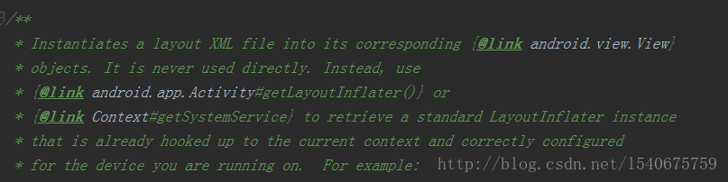
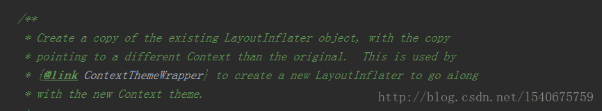
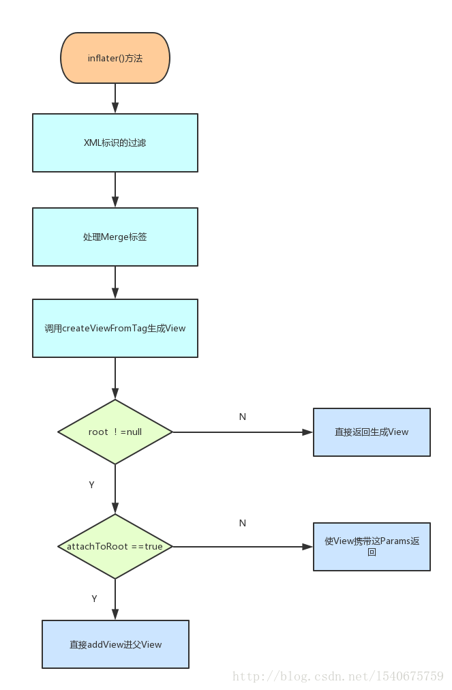
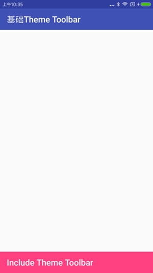
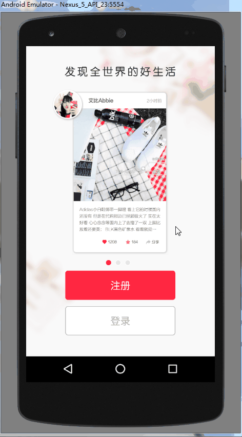
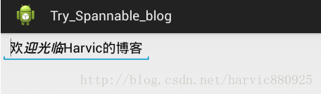
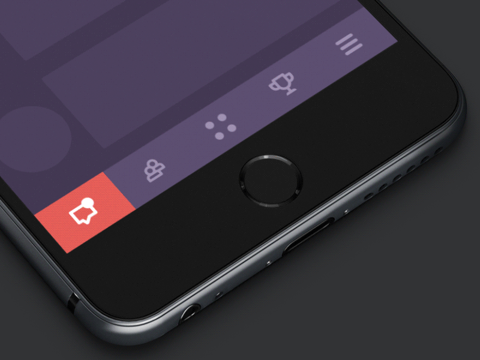

Android-LayoutInflater（布局加载器）
前言
对于LayoutInflater之前一直只会用，却不知道LayoutInflater的加载原理，每次直接
LayoutInflater.from(context).inflate(R.layout.activity_test, root, false);
//不行就这样，反正有一种能实现我要的效果
LayoutInflater.from(context).inflate(R.layout.activity_test, null);
所以，想要趁这个整理博客的机会，顺便把LayoutInflater的内容好好学习学习。
概述
- LayoutInflater的常见使用场景
- LayoutInflater的介绍
- LayoutInflater相关介绍中的相关概念分析
LayoutInflater的常见使用场景
在介绍之前，我们先回一下，我们在哪些地方都使用过LayoutInflater：
在Activity中
LayoutInflater inflater = getLayoutInflater();
View view = inflater.inflate(R.layout.activity_main, null);
在Fragment中
View view = inflater.inflate(R.layout.fragment_guide_one, container, false);
return view;
在Adapter中
@Override
public View getView(int position, View convertView, ViewGroup parent) {
View view = LayoutInflater.from(convertView.getContext()).inflate(R.layout.activity_main, parent, false);
return view;
}
在某些特殊情况下，需要使用LayoutInflater，我们是这样获得它的
LayoutInflater inflater =(LayoutInflater)context.getSystemService(Context.LAYOUT_INFLATER_SERVICE);
上述的使用，是我们平常常见的使用方式，而这些场景都有一个特点，因为这些场景都需要将一个XML布局文件转化成View，所以准确的说LayoutInflater的主要功能来说就是布局加载。
其实LayoutInflater还有一些扩展操作，可以通过我们自定义的方式来实现，在后面的实战篇会介绍。
LayoutInflater的介绍
对于LayoutInflater的介绍性质的内容，博主认为，在网上查的任何内容，都不如查阅源码，API来的靠谱一些，因为API才是第一手的介绍资料，而且Android的源码中介绍的也比较完善。
LayoutInflater属于 android.view包下，在LayoutInflater的头部有一段关于LayoutInflater的介绍：

由于篇幅原因，这里只截取了一部分图片，总结一下：
- LayoutInflater的主要作用将XML文件实例化成相应的View对象
- LayoutInflater在Android开发过程中，获取的方式不是直接new出来的，都是经过这两个方法得到的关联上下文的LayoutInflater：
//在Activity中
LayoutInflater inflater = Activity#getLayoutInflater()
//其他情况
LayoutInflater inflater = context.getSystemService(Context.LAYOUT_INFLATER_SERVICE)
- 如果想使用新的LayoutInflater来加载View，需要使用cloneInContext()，而在新的LayoutInflater需要调用setFactory()设置视图处理器
- 由于性能的原因，XML文件的预处理是在Build过程中进行的。
- LayoutInflater不能加载未编译的XML文件，而且LayoutInflater只能加载，通过XmlPullParser解析的R文件资源。
LayoutInflater介绍相应的解释
经过上面的总结，大家对LayoutInflater有一个大致的认识，为了大家不是太懵逼，让我一一解释一波。
LayoutInflater的主要作用将XML文件实例化成相应的对象
其实，大家在使用LayoutInflater时，也会注意到无非就是将布局资源通过LayoutInflater转换为相对应的View，然后在进行一些其他操作,就是LayoutInflater常见场景中的几种情况：
View view = inflater.inflate(R.layout.fragment_guide_one, container, false);
return view;
LayoutInflater在Android开发过程中，不是通过new出来获取到的？
在上述场景中，除了介绍的两种方式Activity#getLayoutInflater()，以及getSystemService()，大家发现常见场景中还使用了
LayoutInflater inflater =LayoutInflater.from(convertView.getContext())；
其实LayoutInflater.from()这个方法是官方帮我们封装了一层而已，底层还是调用getSystemService()方法，目的是使LayoutInflater与Context对象相绑定：
public static LayoutInflater from(Context context) {
LayoutInflater LayoutInflater = (LayoutInflater) context.getSystemService(Context.LAYOUT_INFLATER_SERVICE);
if (LayoutInflater == null) {
throw new AssertionError("LayoutInflater not found.");
}
return LayoutInflater;
}
如果想使用新的LayoutInflater来加载，需要使用cloneInContext()，而在新的LayoutInflater需要调用setFactory()设置视图处理器
正常来说，这种使用方式的使用场景现在也是比较多的，比如：
- 批量获取XML中自定义的属性
- 动态换肤的效果
- 动态改变布局中的元素
这些都是通过LayoutInflater中的Factory来实现的，而介绍这部分内容会在实战篇来介绍。
由于性能的原因，XML文件的预处理是在Build过程中进行的
举个例子，在编写XML布局资源时，如果漏写了结束符号，或者一些奇怪的操作，在运行程序之前的Build（构建阶段），就会弹出报错。
这里故意将结束符，写错
<TextView
android:layout_width="wrap_content"
android:layout_height="wrap_content"
android:layout_gravity="center_horizontal"
android:textSize="20sp" /
这里就会收到报错信息提示，每个XML都会有一个预编译的过程，这个过程发生在构建阶段（Build），而不是运行时。

LayoutInflater只能加载通过XmlPullParser解析的R文件资源
这里的R文件资源就是指这些资源文件
例如：
R.layout.xxxx
R.drawable.xxxx
R.color.xxx
R.string.xxx
二级概述
- Activity 的 getSystemService的实现过程
- LayoutInflater 如果将布局资源转换为 View 的过程
- LayoutInflater的 Factory，Factory2是什么，在解析过程中的作用是什么？
- LayoutInflater 的 inflater 方法的各个参数的含义，不同的情况的含义
LayoutInflater的构造方法
protected LayoutInflater(Context context) {
mContext = context;
}
这种是LayoutInflater常规的构造方法，将Context传入，最后生成的LayoutInflater与对应的Context相绑定。
protected LayoutInflater(LayoutInflater original, Context newContext) {
mContext = newContext;
mFactory = original.mFactory;
mFactory2 = original.mFactory2;
mPrivateFactory = original.mPrivateFactory;
setFilter(original.mFilter);
}
而这种构造方法来说，只是复制原LayoutInflater的内容，然后将Context对象替换，一般来说只会在cloneInContext()方法中使用。
LayoutInflater#form()方法分析
根据介绍篇的内容，LayoutInflater在Android开发中一般是通过
context.getSystemService(Context.LAYOUT_INFLATER_SERVICE);
LayoutInflater.from(context);
因为第一种方式，已经是LayoutInflater介绍中声明获取的方式之一，那么这里我们看一下LayoutInflater#form的方法。
public static LayoutInflater from(Context context) {
LayoutInflater LayoutInflater = (LayoutInflater) context.getSystemService(Context.LAYOUT_INFLATER_SERVICE);
if (LayoutInflater == null) {
throw new AssertionError("LayoutInflater not found.");
}
return LayoutInflater;
}
从源码上看，LayoutInflater#form()方法内部也是通过getSystemService()方法获得，那么接下来我们看一下context#getSystemService()这个方法：
public abstract Object getSystemService(@ServiceName @NonNull String name);
发现这个只是一个抽象方法，而我们知道Activity也是Context的一个实现。
Activity#getSystemService()这个方法：
@Override
public Object getSystemService(@ServiceName @NonNull String name) {
if (getBaseContext() == null) {
throw new IllegalStateException(
"System services not available to Activities before onCreate()");
}
//获取WindowManager
if (WINDOW_SERVICE.equals(name)) {
return mWindowManager;
//系统的搜索框SearchManager
} else if (SEARCH_SERVICE.equals(name)) {
ensureSearchManager();
return mSearchManager;
}
return super.getSystemService(name);
}
从上面看到，在Activity中只处理了两种类型的服务，分别是获取WindowManager、获取SearchManager，那我们接着看其父类的SystemService()方法：
@Override
public Object getSystemService(String name) {
//找到我们要的东西，注意这是个单例
if (LAYOUT_INFLATER_SERVICE.equals(name)) {
if (mInflater == null) {
mInflater = LayoutInflater.from(getBaseContext()).cloneInContext(this);
}
return mInflater;
}
return getBaseContext().getSystemService(name);
}
在Activity的父类即ContextThemeWrapper的getSystemService()方法中，我们发现了LayoutInflater的创建过程，从上面的代码我们可以看出：
每个Activity内包含的LayoutInflater是一个单例。
Activity创建LayoutInflater时，是先使用最原始的BaseContext创建，然后在将Activity的父类ContextThemeWrapper的信息通过cloneInContext()方法与其绑定。
然后我们在看下LayoutInflater的cloneInContext的实现：
public abstract LayoutInflater cloneInContext(Context newContext);
先看下，这个方法的介绍：

这个方法通过现有的LayoutInflater创建一个新的LayoutInflater副本，唯一变化的地方是指向不同的上下文对象。
在ContextThemeWrapper通过这个方法创建的新的LayoutInflater还包含了主题的信息。
在ContextThemeWrapper中使用cloneInContext是想将更多的信息，赋予LayoutInflater中，与其相互绑定。
Activity中LayoutInflater创建
对于Activity的LayoutInflater，其实在Activity创建之时就已经创建完成，但是这一块内容属于FrameWork层的内容，博主道行太浅了，只想带大家看下from这个方法的实现过程。
这里如果大家想了解可以参考下这篇文章
而Activity#getLayoutInflater方法：
@NonNull
public LayoutInflater getLayoutInflater() {
return getWindow().getLayoutInflater();
}
这个Window对象即PhoneWindow，此时创建出来的LayoutInflater即PhoneLayoutInflater。
这里给大家看下PhoneLayoutInflater的cloneInContext()方法：
public LayoutInflater cloneInContext(Context newContext) {
return new PhoneLayoutInflater(this, newContext);
}
protected PhoneLayoutInflater(LayoutInflater original, Context newContext) {
super(original, newContext);
}
可以发现PhoneLayoutInflater中cloneInContext()的实现，调用了第二个构造方法。
这里在Android Studio是无法查阅的，有条件的可以下载源码，如果下载源码麻烦，可以在这里查阅。
将R.layout.xxx转换为View的过程分析
其实这个过程即LayoutInflater.inflater()这个过程：
public View inflate(@LayoutRes int resource, @Nullable ViewGroup root, boolean attachToRoot) {
final Resources res = getContext().getResources();
if (DEBUG) {
Log.d(TAG, "INFLATING from resource: \"" + res.getResourceName(resource) + "\" (" + Integer.toHexString(resource) + ")");
}
final XmlResourceParser parser = res.getLayout(resource);
try {
return inflate(parser, root, attachToRoot);
} finally {
parser.close();
}
}
在这个方法中，只是先拿到XmlResourceParser，用于后续节点的解析，我们接着往下看：
这里只看一些关键的信息，具体代码大家自行查看
public View inflate(XmlPullParser parser, @Nullable ViewGroup root, boolean attachToRoot) {
//》》》》》》》》》》》》》》》》》第一部分》》》》》》》》》》》》》》》》》》》
try {
while ((type = parser.next()) != XmlPullParser.START_TAG && type != XmlPullParser.END_DOCUMENT) {
// Empty
}
if (type != XmlPullParser.START_TAG) {
throw new InflateException(parser.getPositionDescription() + ": No start tag found!");
}
final String name = parser.getName()
//》》》》》》》》》》》》》》》》》第二部分》》》》》》》》》》》》》》》》》》》
if (TAG_MERGE.equals(name)) {
if (root == null || !attachToRoot) {
throw new InflateException("<merge /> can be used only with a valid " + "ViewGroup root and attachToRoot=true");
}
rInflate(parser, root, inflaterContext, attrs, false);
} else {
//》》》》》》》》》》》》》》》》》第三部分》》》》》》》》》》》》》》》》》》》
final View temp = createViewFromTag(root, name, inflaterContext, attrs);
ViewGroup.LayoutParams params = null;
if (root != null) {
params = root.generateLayoutParams(attrs);
if (!attachToRoot) {
temp.setLayoutParams(params);
}
}
rInflateChildren(parser, temp, attrs, true);
if (root != null && attachToRoot) {
root.addView(temp, params);
}
if (root == null || !attachToRoot) {
result = temp;
}
}
return result;
}
}
第一部分：
这里第一部分的内容，主要是一个XML文件的读取过程，这里有两个判断：
- 遍历XML内容寻找XML标签的开始的标志或者文档结尾的标志才可以跳出循环。
- 如果该XML没有开始的标识，则抛出异常。
下面给大家介绍下，几种常见的解析标识：
XmlPullParser.START_DOCUMENT 文档开始
XmlPullParser.END_DOCUMENT 文档结束
XmlPullParser.START_TAG XML标签的开始
XmlPullParser.END_TAG XML标签的结束
XmlPullParser.TEXT XML标签的内容
第二部分
这部分的一开始先进行了Merge标签的检验，如果发现该节点是Merge，必须满足父View存在，并且与父View绑定的状态。
转换为代码:
root ！= null && attachToRoot ==true
这里Merge是减少布局层级存在的标签，通常和include标签一起使用，所以其必须存在父View，而且merge标签的内容必须与父View绑定。
这里调用rInflate()方法去解析Merge的标签，而rInflate()方法，在另一篇文章已经单独分析。
Android 中LayoutInflater（布局加载器）源码篇之rInflate方法
第三部分
我们再看一下第三部分的代码，代码中会有一些简要的说明：
//》》》》》》》》》》》》》》》》》第三部分》》》》》》》》》》》》》》》》》》》
//createViewFromTag是一个根据name来创建View的方法
final View temp = createViewFromTag(root, name, inflaterContext, attrs);
ViewGroup.LayoutParams params = null;
if (root != null) {
params = root.generateLayoutParams(attrs);
if (!attachToRoot) {
temp.setLayoutParams(params);
}
}
//解析子标签
rInflateChildren(parser, temp, attrs, true);
if (root != null && attachToRoot) {
root.addView(temp, params);
}
if (root == null || !attachToRoot) {
result = temp;
}
}
return result;
}
将第三部分内容分拆一下主要分为以下几块内容：
- 排除标签为include，或者merge之后，就会通过createViewFromTag()方法来创建View
- root是inflater()方法的第二个参数，而attachToRoot是第三个参数，最后会根据这两个参数来决定返回的View
在这部分中，createViewFromTag()是根据name（名称），来创建View的一个方法。
接下来，我们要介绍的是inflater()方法中的参数，到底有什么作用？
ViewGroup.LayoutParams params = null;
//当Root存在
if (root != null) {
params = root.generateLayoutParams(attrs);
if (!attachToRoot) {
//设置View在父布局下Params
temp.setLayoutParams(params);
}
}
//遍历子节点
rInflateChildren(parser, temp, attrs, true);
//如果Root存在并且attachToRoot为true，即与父View绑定
//这里在解析的同时，就会将其添加至父View上
if (root != null && attachToRoot) {
root.addView(temp, params);
}
//如果父Viewwe为null或者没有绑定父View都会将当前解析的View返回，否则返回父View
if (root == null || !attachToRoot) {
result = temp;
}
}
仔细分析上述代码，可以得出如下结论：
从这段代码中，得出以下几个结论：
- 当root为null时，attachToRoot参数无效，而解析出的View作为一个独立的View存在（不存在LayoutParams）。
- 当root不为null时，attactToRoot为false，那么会给该View设置一个父View的约束（LayoutParams），然后将其返回。
- 当root不为null时，attactToRoot为true，那么该View会被直接addView进父View，然后会将父View返回。
- 当root不为null的话，attactToRoot的默认值是true。
public View inflate(XmlPullParser parser, @Nullable ViewGroup root) {
return inflate(parser, root, root != null);
}
上面的代码中，我们还少分析了一处代码rInflateChildren()，即解析子类：
final void rInflateChildren(XmlPullParser parser, View parent, AttributeSet attrs,boolean finishInflate) throws XmlPullParserException, IOException {
rInflate(parser, parent, parent.getContext(), attrs, finishInflate);
}
如果你之前没看过这段代码，其实你会像博主之前一样，一直在试，而不知道这段代码正确的含义，但是有时候源码会是一个很好的老师，通过它能够得到你想要的。
流程图

CreateViewFromTag源码解析
private View createViewFromTag(View parent, String name, Context context, AttributeSet attrs) {
return createViewFromTag(parent, name, context, attrs, false);
}
createViewFromTag在LayoutInflater中存在重载，最终还是会调用5个参数的createViewFromTag方法。
View createViewFromTag(View parent, String name, Context context, AttributeSet attrs,boolean ignoreThemeAttr) {
//解析view标签
if (name.equals("view")) {
name = attrs.getAttributeValue(null, "class");
}
//如果需要该标签与主题相关，需要对context进行包装，将主题信息加入context包装类ContextWrapper
if (!ignoreThemeAttr) {
final TypedArray ta = context.obtainStyledAttributes(attrs, ATTRS_THEME);
final int themeResId = ta.getResourceId(0, 0);
if (themeResId != 0) {
context = new ContextThemeWrapper(context, themeResId);
}
ta.recycle();
}
//BlinkLayout是一种闪烁的FrameLayout，它包裹的内容会一直闪烁，类似QQ提示消息那种。
if (name.equals(TAG_1995)) {
return new BlinkLayout(context, attrs);
}
//设置Factory，来对View做额外的拓展，这块属于可定制的内容
try {
View view;
if (mFactory2 != null) {
view = mFactory2.onCreateView(parent, name, context, attrs);
} else if (mFactory != null) {
view = mFactory.onCreateView(name, context, attrs);
} else {
view = null;
}
if (view == null && mPrivateFactory != null) {
view = mPrivateFactory.onCreateView(parent, name, context, attrs);
}
//如果此时不存在Factory，不管Factory还是Factory2，还是mPrivateFactory都不存在，那么会直接对name直接进行解析
if (view == null) {
final Object lastContext = mConstructorArgs[0];
mConstructorArgs[0] = context;
try {
//如果name中包含.即为自定义View，否则为原生的View控件
if (-1 == name.indexOf('.')) {
view = onCreateView(parent, name, attrs);
} else {
view = createView(name, null, attrs);
}
} finally {
mConstructorArgs[0] = lastContext;
}
}
return view;
根据源码可以将createViewFromTag分为三个流程：
- 对一些特殊标签，做分别处理，例如：view，TAG_1995(blink)
- 进行对Factory、Factory2的设置判断，如果设置那么就会通过设置Factory、Factory2进行生成View
- 如果没有设置Factory或Factory2，那么就会使用LayoutInflater默认的生成方式，进行View的生成
createViewFromTag分析过程：
处理view标签
如果标签的名称是view，注意是小写的view，这个标签一般大家不太常用，具体的使用情况如下：
<view
class="RelativeLayout"
android:layout_width="match_parent"
android:layout_height="match_parent"></view>
在使用时，相当于所有控件标签的父类一样，可以设置class属性，这个属性会决定view这个节点会变成什么控件。
如果该节点与主题相关，则需要特殊处理
如果该节点与主题（Theme）相关，需要将context与theme信息包装至ContextWrapper类。
处理TAG_1995标签
这就有意思了，TAG_1995指的是blink这个标签，这个标签感觉使用的很少，以至于大家根本不知道。
这个标签最后会被解析成BlinkLayout，BlinkLayout其实就是一个FrameLayout，这个控件最后会将包裹内容一直闪烁(就和电脑版QQ消息提示一样)，有空大家可以自行尝试下，很简单，下面贴一下用法：
<blink
android:layout_width="wrap_content"
android:layout_height="wrap_content">
<TextView
android:layout_width="wrap_content"
android:layout_height="wrap_content"
android:text="这个标签会一直闪烁"/>
</blink>
判断其是否存在Factory或者Factory2
在这里先对Factory进行判空，这里不管Factory还是Factory2（mPrivateFactory 就是Factory2），本质上都是一种扩展操作，提前解析name，然后直接将解析后的View返回。
Factory
public interface Factory {
public View onCreateView(String name, Context context, AttributeSet attrs);
}
Factory2
public interface Factory2 extends Factory {
public View onCreateView(View parent, String name, Context context, AttributeSet attrs);
}
从这里可以看出，Factory2和Factory都是一个接口，需要自己实现，而Factory2和Factory的区别是Factory2继承Factory，从而扩展出一个参数，就是增加了该节点的父View。
这里我自定义了一个Factory，下面自定义解析View的过程：
@Override
public View onCreateView(String name, Context context, AttributeSet attrs) {
View view = null;
try {
if (-1 == name.lastIndexOf(".")) {
if (name.equals("View") || name.equals("ViewGroup")) {
view = mInflater.createView(name, "android.view.", attrs);
} else {
view = mInflater.createView(name, "android.widget.", attrs);
}
} else {
if (name.contains(".")) {
String checkName = name.substring(name.lastIndexOf("."));
String prefix = name.substring(0, name.lastIndexOf("."));
view = mInflater.createView(checkName, prefix, attrs);
}
}
} catch (ClassNotFoundException e) {
e.printStackTrace();
}
if(view != null){
//在这里可以对View做一些额外的操作，并且能够获得View的属性集，可以做一些自定义操作。
view.xxxxxx
}
return view;
}
从上面可以看出，Factory和Factory2其实LayoutInflater解析View时的一种扩展实现，在这里可以额外的对View处理，设置Factory和Factory2需要通过setFactory()或者setFactory2()来实现。
setFactory()
public void setFactory(Factory factory) {
//如果已经设置Factory，不可以继续设置Factory
if (mFactorySet) {
throw new IllegalStateException("A factory has already been set on this LayoutInflater");
}
if (factory == null) {
throw new NullPointerException("Given factory can not be null");
}
//设置Factory会添加一个标记
mFactorySet = true;
if (mFactory == null) {
mFactory = factory;
} else {
mFactory = new FactoryMerger(factory, null, mFactory, mFactory2);
}
}
setFactory2()
public void setFactory2(Factory2 factory) {
if (mFactorySet) {
throw new IllegalStateException("A factory has already been set on this LayoutInflater");
}
if (factory == null) {
throw new NullPointerException("Given factory can not be null");
}
//注意设置Factory和Factory2的标记是共用的
mFactorySet = true;
if (mFactory == null) {
mFactory = mFactory2 = factory;
} else {
mFactory = mFactory2 = new FactoryMerger(factory, factory, mFactory, mFactory2);
}
}
通过上面代码可以看出，Factory和Factory2只能够设置一次，并且Factory和Factory2二者互斥，只能存在一个。
所以一般setFactory()或者setFactory2()，一般在cloneInContext()之后设置，这样生成一个新的LayoutInflater，标记默认是false，才能够设置。
LayoutInflater内置的解析过程
如果Factory或者Factory2没有设置，或者返回View为null，才会使用默认解析方式。
if (-1 == name.indexOf('.')) {
view = onCreateView(parent, name, attrs);
} else {
view = createView(name, null, attrs);
}
这段就是对自定义View和原生的控件进行判断，这里给大家说明下原生控件和自定义View的name区别：
原生 ： RelativeLayout
自定义View ： com.demo.guidepagedemo.customview.CustomImageView
原生控件的解析方式 onCreateView ：
protected View onCreateView(View parent, String name, AttributeSet attrs) throws ClassNotFoundException {
return onCreateView(name, attrs);
}
然后调用的还是2个参数的onCreateView()方法
protected View onCreateView(String name, AttributeSet attrs) throws ClassNotFoundException {
return createView(name, "android.view.", attrs);
}
可以看到最终方法的指向还是调用createView方法：
public final View createView(String name, String prefix, AttributeSet attrs) throws ClassNotFoundException, InflateException {
//判断构造器是否存在
Constructor<? extends View> constructor = sConstructorMap.get(name);
if (constructor != null && !verifyClassLoader(constructor)) {
constructor = null;
sConstructorMap.remove(name);
}
Class<? extends View> clazz = null;
try {
//如果构造器不存在，这个就相当于Class之前是否被加载过，sConstructorMap就是缓存这些Class的Map
if (constructor == null) {
//通过前缀+name的方式去加载
clazz = mContext.getClassLoader().loadClass(prefix != null ? (prefix + name) : name).asSubclass(View.class);
//通过过滤去设置一些不需要加载的对象
if (mFilter != null && clazz != null) {
boolean allowed = mFilter.onLoadClass(clazz);
if (!allowed) {
failNotAllowed(name, prefix, attrs);
}
}
constructor = clazz.getConstructor(mConstructorSignature);
constructor.setAccessible(true);
//缓存Class
sConstructorMap.put(name, constructor);
} else {
//如果Class存在，并且加载Class的ClassLoader合法
//这里先判断该Class是否应该被过滤
if (mFilter != null) {
//过滤器也有缓存之前的Class是否被允许加载，判断这个Class的过滤状态
Boolean allowedState = mFilterMap.get(name);
if (allowedState == null) {
//加载Class对象操作
clazz = mContext.getClassLoader().loadClass(prefix != null ? (prefix + name) : name).asSubclass(View.class);
//判断Class是否可被加载
boolean allowed = clazz != null && mFilter.onLoadClass(clazz);
mFilterMap.put(name, allowed);
if (!allowed) {
failNotAllowed(name, prefix, attrs);
}
} else if (allowedState.equals(Boolean.FALSE)) {
failNotAllowed(name, prefix, attrs);
}
}
}
Object[] args = mConstructorArgs;
args[1] = attrs;
//如果过滤器不存在，直接实例化该View
final View view = constructor.newInstance(args);
//如果View属于ViewStub那么需要给ViewStub设置一个克隆过的LayoutInflater
if (view instanceof ViewStub) {
final ViewStub viewStub = (ViewStub) view;
viewStub.setLayoutInflater(cloneInContext((Context) args[0]));
}
return view;
}
}
上面代码有点长，就直接在代码里面加注释了，这里额外说一下这个方法：
判断ClassLoader是否安全的verifyClassLoader ：
private final boolean verifyClassLoader(Constructor<? extends View> constructor) {
final ClassLoader constructorLoader = constructor.getDeclaringClass().getClassLoader();
if (constructorLoader == BOOT_CLASS_LOADER) {
//这里注意BootClassLoader是相当于所有派生出来的ClassLoader的原始基类，所有的ClassLoader都是根据其衍生的。
return true;
}
//这里是一个遍历操作，一直在遍历加载mContext的ClassLoader的继承树，一直在往上寻找，如果
//constructor的ClassLoader与继承树中某个ClassLoader相同就说明这个ClassLoader是安全的
ClassLoader cl = mContext.getClassLoader();
do {
if (constructorLoader == cl) {
return true;
}
cl = cl.getParent();
} while (cl != null);
return false;
}
}
这里简单说明下，几种ClassLoader的作用：
- BootClassLoader 加载Android FrameWork层的一些字节码文件
- PathClassLoader 加载已经安装到系统上的应用App（apk）上的字节码文件
- DexClassLoader 加载指定目录中的Class字节码文件
- BaseDexClassLoader 是PathClassloader和DexClassLoader的父类
一般的App刚启动的时候，就会有两个ClassLoader被加载，分别是PathClassLoader、DexClassLoader而这两个ClassLoader都是继承BaseDexClassLoader.
而BaseDexClassLoader继承的是ClassLoader，但是在ClassLoader中getParent()方法赋予其Parent为BootClassLoader，这个如果大家感兴趣，可以自行查阅ClassLoader。
流程图

rInflate()的源码分析
void rInflate(XmlPullParser parser, View parent, Context context,AttributeSet attrs, boolean finishInflate) throws XmlPullParserException, IOException {
//获取该标签的深度
final int depth = parser.getDepth();
int type;
while (((type = parser.next()) != XmlPullParser.END_TAG || parser.getDepth() > depth) && type != XmlPullParser.END_DOCUMENT) {
if (type != XmlPullParser.START_TAG) {
continue;
}
final String name = parser.getName();
//如果该节点为requestFocus
if (TAG_REQUEST_FOCUS.equals(name)) {
parseRequestFocus(parser, parent);
//如果该节点为tag
} else if (TAG_TAG.equals(name)) {
parseViewTag(parser, parent, attrs);
//如果该节点为include标签
} else if (TAG_INCLUDE.equals(name)) {
if (parser.getDepth() == 0) {
throw new InflateException("<include /> cannot be the root element");
}
//解析include标签
parseInclude(parser, context, parent, attrs);
} else if (TAG_MERGE.equals(name)) {
//如果该节点为Merge
throw new InflateException("<merge /> must be the root element");
} else {
//否则属于正常的View
final View view = createViewFromTag(parent, name, context, attrs);
final ViewGroup viewGroup = (ViewGroup) parent;
final ViewGroup.LayoutParams params = viewGroup.generateLayoutParams(attrs);
//接下来解析子View
rInflateChildren(parser, view, attrs, true);
//注意这里直接进行addView操作
viewGroup.addView(view, params);
}
}
//如果解析完成，需要通知父View，解析完成。
if (finishInflate) {
parent.onFinishInflate();
}
}
在rInflate这里做的操作，就是识别这些节点，然后对应解析形成响应的元素，下面我们会根据代码，一段一段分析rInflate都做了什么.
- 如果发现requestFocus标签，则调用父View的requestFocus()方法。
requestFocus标签使用：
<EditText
android:id="@+id/text"
android:layout_width="match_parent"
android:layout_height="wrap_content" >
<!-- 当前控件处于焦点状态 -->
<requestFocus />
parseRequestFocus方法：
private void parseRequestFocus(XmlPullParser parser, View view) throws XmlPullParserException, IOException {
//调用其父View的requestFocus（）方法
view.requestFocus();
consumeChildElements(parser);
}
- 如果发现tag标签，为其设置（key，value）模式的tag。
tag标签使用：
<Button
android:id="@+id/tag_btn"
android:layout_width="match_parent"
android:layout_height="wrap_content"
android:onClick="openClickNotification"
android:text="自定义带监听事件的通知">
<tag
android:id="@+id/tag_id"
android:value="@string/app_name" />
</Button>
parseViewTag方法 ：
private void parseViewTag(XmlPullParser parser, View view, AttributeSet attrs) throws XmlPullParserException, IOException {
final Context context = view.getContext();
final TypedArray ta = context.obtainStyledAttributes(attrs, R.styleable.ViewTag);
//这里设置tag的key
final int key = ta.getResourceId(R.styleable.ViewTag_id, 0);
//这里设置tag的value
final CharSequence value = ta.getText(R.styleable.ViewTag_value);
view.setTag(key, value);
ta.recycle();
consumeChildElements(parser);
}
在parseViewTag()方法中，会把（key，value）形式的tag赋予View。
Key指的是R.id.tag_id对应的int类型数据；
Value指的是R.string.app_name的String类型数据；
- 如果是Include标签，这里开始先获取了Include的深度
final int depth = parser.getDepth();
所谓深度就是XML的层级关系，例如这样：
<!-- outside -->
<root>
sometext
<foobar>
</foobar>
</root>
<!-- outside -->
判断该Include标签的深度是否是0，如果为0，则抛出异常，因为include不能为根元素。
如果是Merge标签，那么会直接抛出异常，因为Merge必须为根元素，也就是深度为0的节点。
最后是其他标签，例如View，一起其他的一些标签
final View view = createViewFromTag(parent, name, context, attrs);
final ViewGroup viewGroup = (ViewGroup) parent;
final ViewGroup.LayoutParams params = viewGroup.generateLayoutParams(attrs);
rInflateChildren(parser, view, attrs, true);
viewGroup.addView(view, params);
在加载View的过程，大致分为三个阶段：
- createViewFromTag() 见名知意，根据节点名称创建View
- rInflateChildren() 加载该节点内子类
- parent.addView() 最后将该View添加进Parent布局
第一阶段 : createViewFromTag()
createViewFromTag()是根据name(节点名称)来解析出View的一个方法
第二阶段 ：rInflateChildren()
final void rInflateChildren(XmlPullParser parser, View parent, AttributeSet attrs,boolean finishInflate) throws XmlPullParserException, IOException {
rInflate(parser, parent, parent.getContext(), attrs, finishInflate);
}
这里可以看到，这里会将解析出来的View作为Root(父View)，继续进行子节点的解析，会继续调用，直到无法解析。
这里的无法解析是指：
- 当前解析的标识为XmlPullParser.END_TAG（节点结束的标识符），并且深度不在父节点的标签内。
- 或者type 为 XmlPullParser.END_DOCUMENT（文档结束的标识符）。
第三阶段 parent.addView()将View添加进父View中
viewGroup.addView(view, params);
这段话，不难理解，就是将解析出的View，添加到父View中。
流程图

parseInclude()是在哪里使用的？
void rInflate(XmlPullParser parser, View parent, Context context,AttributeSet attrs, boolean finishInflate) throws XmlPullParserException, IOException {
//----------------省略部分代码--------------------//
} else if (TAG_INCLUDE.equals(name)) {
if (parser.getDepth() == 0) {
throw new InflateException("<include /> cannot be the root element");
}
parseInclude(parser, context, parent, attrs);
}
//----------------省略部分代码--------------------//
}
从上来代码中，可以发现parseInclude()是在rInflate()中出现，作用是处理当前节点是Include标签时的状况。
parseInclude()源码解析
//参数说明：
// parser 解析布局的解析器
// context 当前加载布局的上下文对象
// parent 父容器
// attrs 属性集合（XML该节点的属性集合）
private void parseInclude(XmlPullParser parser, Context context, View parent,
AttributeSet attrs) throws XmlPullParserException, IOException {
int type;
// 判断 Include标签是否在 ViewGroup容器之内，因为 include 标签只能存在于 ViewGroup 容器之内。
if (parent instanceof ViewGroup) {
//------------------<第一部分>-------------------//
//当开发者设置 include 主题属性时，可以覆盖被 include 包裹View的主题属性。
//但是这种操作很少会使用。
//所以如果被包裹 View 设置主题属性，我们在设置就会出现覆盖效果。
//以 include 标签的主题属性为最终的主题属性
//提取出 include 的 thme 属性，如果设置了 them 属性，那么include 包裹的View 设置的 theme 将会无效
final TypedArray ta = context.obtainStyledAttributes(attrs, ATTRS_THEME);
final int themeResId = ta.getResourceId(0, 0);
final boolean hasThemeOverride = themeResId != 0;
if (hasThemeOverride) {
context = new ContextThemeWrapper(context, themeResId);
}
ta.recycle();
//------------------<第二部分>-------------------//
//如果这个属性是指向主题中的某个属性，我们必须设法得到主题中layout 的资源标识符
//先获取 layout 属性（资源 id）是否设置
int layout = attrs.getAttributeResourceValue(null, ATTR_LAYOUT, 0);
if (layout == 0) {
//如果没直接设置布局的资源 id，那么就检索?attr/name这一类的 layout 属性
final String value = attrs.getAttributeValue(null, ATTR_LAYOUT);
if (value == null || value.length() <= 0) {
throw new InflateException("You must specify a layout in the"
+ " include tag: <include layout=\"@layout/layoutID\" />");
}
//从 ?attr/name 这一类的属性中，获取布局属性
layout = context.getResources().getIdentifier(value.substring(1), null, null);
}
//这个布局资源也许存在主题属性中，所以需要去主题属性中解析
if (mTempValue == null) {
mTempValue = new TypedValue();
}
if (layout != 0 && context.getTheme().resolveAttribute(layout, mTempValue, true)) {
layout = mTempValue.resourceId;
}
//------------------<第三部分>-------------------//
if (layout == 0) {
final String value = attrs.getAttributeValue(null, ATTR_LAYOUT);
throw new InflateException("You must specify a valid layout "
+ "reference. The layout ID " + value + " is not valid.");
} else {
final XmlResourceParser childParser = context.getResources().getLayout(layout);
try {
final AttributeSet childAttrs = Xml.asAttributeSet(childParser);
while ((type = childParser.next()) != XmlPullParser.START_TAG &&
type != XmlPullParser.END_DOCUMENT) {
// Empty.
}
if (type != XmlPullParser.START_TAG) {
throw new InflateException(childParser.getPositionDescription() +
": No start tag found!");
}
final String childName = childParser.getName();
if (TAG_MERGE.equals(childName)) {
//解析 Meger 标签
rInflate(childParser, parent, context, childAttrs, false);
} else {
//根据 name名称来创建View
final View view = createViewFromTag(parent, childName,
context, childAttrs, hasThemeOverride);
final ViewGroup group = (ViewGroup) parent;
//获取 View 的 id 和其 Visiable 属性
final TypedArray a = context.obtainStyledAttributes(
attrs, R.styleable.Include);
final int id = a.getResourceId(R.styleable.Include_id, View.NO_ID);
final int visibility = a.getInt(R.styleable.Include_visibility, -1);
a.recycle();
//需要将 Parent中的 LayoutParams 设置为其 Params 属性。
//如果 Parent 没有通用的 Params，那么就会抛出Runtime 异常
//然后会为其设置 include 包裹内容的通用 Params，
ViewGroup.LayoutParams params = null;
try {
params = group.generateLayoutParams(attrs);
} catch (RuntimeException e) {
// Ignore, just fail over to child attrs.
}
if (params == null) {
params = group.generateLayoutParams(childAttrs);
}
view.setLayoutParams(params);
// 解析子标签
rInflateChildren(childParser, view, childAttrs, true);
if (id != View.NO_ID) {
view.setId(id);
}
// 加载include内容时，需要直接设置其 可见性
switch (visibility) {
case 0:
view.setVisibility(View.VISIBLE);
break;
case 1:
view.setVisibility(View.INVISIBLE);
break;
case 2:
view.setVisibility(View.GONE);
break;
}
//添加至父容器中
group.addView(view);
}
} finally {
childParser.close();
}
}
} else {
throw new InflateException("<include /> can only be used inside of a ViewGroup");
}
LayoutInflater.consumeChildElements(parser);
}
先把parseInclude()这个方法全景先看下，然后我们在进行分拆，一部分一部分分析。
parseInclude()参数解读
parseInclude()中分别含义四个参数：
解析器 -> XmlPullParser parser
用来解析XML文件的解析器，通过解析器可以得到当前节点的相对应的AttributeSet（属性集）
上下文对象 - > Context context
当前加载该XML的上下文对象，并且这个Context与LayoutInflater属于相互绑定关系（一一对应）
父容器 - > View parent
包裹该节点的父容器，一般来说都是继承ViewGroup实现的视图组
属性集 -> AttributeSet attrs
该节点的属性集，包括所有该节点的相关属性
Include中的theme属性
这里大家先了解一个相关的问题，关于include标签设置theme属性的情况：
一般来说theme（主题）一般出现在Activtiy的AndroidManifest文件下，来给Activity设置统一的布局效果，而且可以使用如下的操作来进行主题属性的使用。
// ?attr这样的形式，使用主题中的设置参数
android:background="?attr/colorPrimary"
如果Include标签下设置了新的theme，那么Include中的内容在使用主题属性时，使用的theme主题就是（include）设置的内容，而不是Activity默认下的主题，形成了一种覆盖效果。
也就是说Include标签设置的主题可以覆盖Activity设置的根主题，但是Include设置的主题只作用与Include内部。
举个栗子：
style.xml
先定义好两个基础Theme，一个是作为App的基础主题，另一个是include中的主题。
<style name="AppTheme" parent="Theme.AppCompat.Light.NoActionBar">
<!-- BaseApplication theme -->
<item name="colorPrimary">@color/colorPrimary</item>
<item name="colorPrimaryDark">@color/colorPrimaryDark</item>
<item name="colorAccent">@color/colorAccent</item>
</style>
<style name="IncludeTheme" parent="Theme.AppCompat.Light.NoActionBar">
<!-- Include Theme -->
<item name="colorPrimary">@color/colorAccent</item>
<item name="colorPrimaryDark">@color/colorAccent</item>
<item name="colorAccent">@color/colorAccent</item>
</style>
AndroidManifest.xml
设置Activity的基础主题为AppTheme
<activity
android:name="com.demo.MainActivity"
android:theme="@style/AppTheme"></activity>
activity_main.xml
<?xml version="1.0" encoding="utf-8"?>
<RelativeLayout xmlns:android="http://schemas.android.com/apk/res/android"
android:layout_width="match_parent"
android:layout_height="match_parent"
android:orientation="vertical">
<!-- 这里是使用基础Theme的Toolbar -->
<android.support.v7.widget.Toolbar
android:id="@+id/activity_theme_tb"
android:layout_width="match_parent"
android:layout_height="50dp"
android:background="?attr/colorPrimary" />
<!-- 这里是自带Theme Include的Toolbar -->
<include
layout="@layout/test_toolbar"
android:layout_width="match_parent"
android:layout_height="wrap_content"
android:layout_alignParentBottom="true"
android:theme="@style/IncludeTheme" />
</RelativeLayout>
接下来，我们在看一下Include包裹的布局
test_toolbar.xml
<?xml version="1.0" encoding="utf-8"?>
<LinearLayout xmlns:android="http://schemas.android.com/apk/res/android"
android:layout_width="match_parent"
android:layout_height="wrap_content"
android:orientation="vertical">
<android.support.v7.widget.Toolbar
android:id="@+id/include_toolbar"
android:layout_width="match_parent"
android:layout_height="50dp"
android:background="?attr/colorPrimary" />
</LinearLayout>
从上面的XML文件我们可以看出两个Toolbar调用的background都指向theme的colorPrimary属性，接下来看一下显示效果：

从效果图可以发现，Include Toolbar显示的颜色是粉色的，也就是Include额外设置的theme，这里也是从正面证明了这个概念。
第一部分：Include Theme主题的设置
//------------------<第一部分>-------------------//
//提取出Theme属性
final TypedArray ta = context.obtainStyledAttributes(attrs, ATTRS_THEME);
final int themeResId = ta.getResourceId(0, 0);
final boolean hasThemeOverride = themeResId != 0;
//如果存在Theme属性，那么Include包含的子标签都会使用该主题
if (hasThemeOverride) {
context = new ContextThemeWrapper(context, themeResId);
}
ta.recycle();
通过上面的介绍，很明显这段代码含义，就是检测是否给Include标签设置了Theme属性，如果设置theme，就创建相应的ContextThemeWrapper，用于之后子标签的解析时theme的使用。
第二部分：Include 内容布局的设置
//------------------<第二部分>-------------------//
//先获取 layout 属性（资源 id）是否设置
int layout = attrs.getAttributeResourceValue(null, ATTR_LAYOUT, 0);
if (layout == 0) {
//如果没直接设置布局的资源 id，那么就检索?attr/name这一类的 layout 属性
final String value = attrs.getAttributeValue(null, ATTR_LAYOUT);
if (value == null || value.length() <= 0) {
throw new InflateException("You must specify a layout in the" + " include tag: <include layout=\"@layout/layoutID\" />");
}
//从?attr/name 这一类的属性中，获取布局属性
layout = context.getResources().getIdentifier(value.substring(1), null, null);
}
//这个布局资源也许存在主题属性中，所以需要去主题属性中解析
if (mTempValue == null) {
mTempValue = new TypedValue();
}
if (layout != 0 && context.getTheme().resolveAttribute(layout, mTempValue, true)) {
layout = mTempValue.resourceId;
}
这部分的内容主要是提取Include的内容布局的提取，Include的内容布局的设置有两种：
第一种 ： 直接@layout 后面设置布局的XML
layout="@layout/test_toolbar"
第二种：通过引入theme的item设置的layout属性
Include标签下：
layout="?attr/theme_layout"
包裹Include标签的布局Theme（注意：这里不是Include设置的主题）：
<style name="AppTheme" parent="Theme.AppCompat.Light.NoActionBar">
<item name="colorPrimary">@color/colorPrimary</item>
<item name="colorPrimaryDark">@color/colorPrimaryDark</item>
<item name="colorAccent">@color/colorAccent</item>
//重点在这里！！！！！
<item name="theme_layout">@layout/test_toolbar</item>
</style>
而上面的代码的作用是检索layout属性，如果layout已经以第一种方式引入，就不需要在去theme中检索，如果layout第一种方式检索不到资源ID，那么就会去以第二种方式进行检索。
第三部分： Include标签的View处理
//------------------<第三部分>-------------------//
//如果此时还找不到layout，那么必然异常~，会报找不到资源ID的layout异常
if (layout == 0) {
final String value = attrs.getAttributeValue(null, ATTR_LAYOUT);
throw new InflateException("You must specify a valid layout "
+ "reference. The layout ID " + value + " is not valid.");
} else {
//生成子解析器
final XmlResourceParser childParser = context.getResources().getLayout(layout);
try {
final AttributeSet childAttrs = Xml.asAttributeSet(childParser);
//----------------省略了XML一些规则的判断----------------//
//获取子节点的名称
final String childName = childParser.getName();
if (TAG_MERGE.equals(childName)) {
//解析 Meger 标签
rInflate(childParser, parent, context, childAttrs, false);
} else {
//根据 name名称来创建View
final View view = createViewFromTag(parent, childName,
context, childAttrs, hasThemeOverride);
final ViewGroup group = (ViewGroup) parent;
//获取 View 的 id 和其 Visiable 属性
final TypedArray a = context.obtainStyledAttributes(
attrs, R.styleable.Include);
final int id = a.getResourceId(R.styleable.Include_id, View.NO_ID);
final int visibility = a.getInt(R.styleable.Include_visibility, -1);
a.recycle();
//需要将 Parent中的 LayoutParams 设置为其 Params 属性。
//如果 Parent 没有通用的 Params，那么就会抛出Runtime 异常
//然后会为其设置 include 包裹内容的通用 Params，
ViewGroup.LayoutParams params = null;
try {
params = group.generateLayoutParams(attrs);
} catch (RuntimeException e) {
// Ignore, just fail over to child attrs.
}
if (params == null) {
params = group.generateLayoutParams(childAttrs);
}
view.setLayoutParams(params);
// 解析子标签
rInflateChildren(childParser, view, childAttrs, true);
if (id != View.NO_ID) {
view.setId(id);
}
// 加载include内容时，需要直接设置其 可见性
switch (visibility) {
case 0:
view.setVisibility(View.VISIBLE);
break;
case 1:
view.setVisibility(View.INVISIBLE);
break;
case 2:
view.setVisibility(View.GONE);
break;
}
//添加至父容器中
group.addView(view);
}
} finally {
childParser.close();
}
}
} else {
throw new InflateException("<include /> can only be used inside of a ViewGroup");
}
这部分主要的作用是解析Include包裹layout的根标签：
（1）先特别处理Merge标签 ：
如果子节点是Merge标签，那么直接进行内容的解析，调用rInflater()方法。
而rInflater()这个方法的作用是，解析某个节点，根据节点的不同类型从而进行不同的处理
（2）解析Include的内容：
在这之前先通过createViewFromTag()方法，根据名称来生成相对应的View
这里分成两块内容
第一块是设置LayoutParams：
ViewGroup.LayoutParams params = null;
try {
//加载Include的父ViewGroup的LayoutParams
params = group.generateLayoutParams(attrs);
} catch (RuntimeException e) {
// Ignore, just fail over to child attrs.
}
if (params == null) {
//加载Include的子ViewGroup的LayoutParams
params = group.generateLayoutParams(childAttrs);
}
view.setLayoutParams(params);
这段的作用是为Include的包裹的根View设置LayoutParams，使用的LayoutParams默认是Include外层的ViewGroup。
如果此时Params加载失败，那就会使用Include包裹的ViewGroup的LayoutParams，反正怎么都得设置一个。
第二块是在这里设置子ViewGroup的显隐性：
// 加载include内容时，需要直接设置其 可见性
switch (visibility) {
case 0:
view.setVisibility(View.VISIBLE);
break;
case 1:
view.setVisibility(View.INVISIBLE);
break;
case 2:
view.setVisibility(View.GONE);
break;
}
//添加至父容器中
group.addView(view);
设置ViewGroup的显隐性，之后就将其添加至父View中，至此parseInclude的分析就到此结束。
流程图

效果

分析
这个效果属于视觉差的效果，原理是根据ViewPager的滑动方向，页面内物理做同向偏移，只要偏移距离大于页面的偏移，就会产生速度差，那么就会实现该效果。
实现速度差，我们需要一个滑动的比例系数：
在页面进入时：
页面物体的移动距离 = (页面长度 - 滑动距离) * 滑动系数
在页面滑出时：
页面物体的移动距离 = （0 - 滑动距离 ） * 滑动系数
同时考虑第二张Gif上，发现物体Y轴也存在移动，所以也得需要考虑Y轴方向的滑动，整理下：
//进入时：
view.setTranslateX((vpWidth - positionOffsetPixels) * xIn);
view.setTranslateY((vpWidth - positionOffsetPixels) * yIn);
//退出时
view.setTranslateX((0 - positionOffsetPixels) * xOut);
view.setTranslateY((0 - positionOffsetPixels) * yOut);
这样就可以实现出：
- 进入该界面时，界面上的物品快速飞进来。
- 退出该界面时，界面上的物理快速飞出去。
实现思路
对于上述的分析，这里的实现思路存在两种：
- 自定义View，自定义xIn、yIn、xOut、yOut四个属性的系数，所有界面上的物体继承这个自定义View。
- 自定义LayoutInflater.Factory在解析时，将这些自定义属性提取，以Tag方式储存起来。
优缺点分析
自定义View：
优点：可以对物体做更多层面的扩展，这个自定义LayoutInflater.Factory是不具备的。
缺点：由于界面的物体数量过多，在findViewById时需要处理的View元素过多，极大的增加代码量。
自定义LayoutInflater.Factory :
优点：可以在解析过程中对View做统一操作，当出现大量的View时，能够缩减大量代码。
缺点：在解析时预处理View，但是就不能动态的改变View的属性，要对View进行扩展性操作，自定义LayoutInflater.Factory不具备这样的功能。
自定义LayoutInflater.Factory
上述的两种方案的优缺点已经分析完毕，但是本文作为实战篇，所以只会介绍自定义LayoutInflater.Factory这种方式。
在实际场景中，需要结合自身情况，以及上述的优缺点，进行合理选择。
在介绍之前，先看一段代码：
View view;
//如果Factory2存在，就会调用其onCreateView方法
if (mFactory2 != null) {
view = mFactory2.onCreateView(parent, name, context, attrs);
//如果Factory存在，就会调用其onCreateView方法，和Factory2不同的时，这里的参数没有父View
} else if (mFactory != null) {
view = mFactory.onCreateView(name, context, attrs);
} else {
view = null;
}
//如果没有Factory或者Factory2，就会寻找mPrivateFactory（本质上也是Factory2）
if (view == null && mPrivateFactory != null) {
view = mPrivateFactory.onCreateView(parent, name, context, attrs);
}
这段代码出自LayoutInflater中createViewFromTag()方法，作用是根据View的名称（name参数）来创建View.
在这里就简单描述下，这个方法的主要流程：
- 对一些特殊标签，做分别处理，例如：view，TAG_1995(blink)
- 进行对Factory、Factory2的设置判断，如果设置那么就会通过设置Factory、Factory2进行生成View
- 如果没有设置Factory或Factory2，那么就会使用LayoutInflater默认的生成方式，进行View的生成
在实战篇中，只有第二部分和我们今天的内容是相关的，我们在看一遍第二条。
进行对Factory、Factory2的设置判断，如果设置那么就会通过设置Factory、Factory2进行生成View
如果设置了Factory或者Factory2，那么就不会使用LayoutInflater默认的生成方式，那么生成View的过程，就由我们自主把控，这才是我们自定义LayoutInflater.Factory的主要原因。
自定义Factory还是Factory2 ？
View view;
//如果Factory2存在，就会调用其onCreateView方法
if (mFactory2 != null) {
view = mFactory2.onCreateView(parent, name, context, attrs);
//如果Factory存在，就会调用其onCreateView方法，和Factory2不同的时，这里的参数没有父View
} else if (mFactory != null) {
view = mFactory.onCreateView(name, context, attrs);
} else {
view = null;
}
我们能够从这段代码中得出，Factory2比Factory的优先级要高，即Factory2存在Factory就不可能会被调用，同理可以得出结论：
优先级顺序:
mFactory2 > mFactory > mPrivateFactory > LayoutInflater默认处理方式
而且我们还能够发现mFactory2的onCreateView()方法与mFactory是不相同的：
//mFactory2
mFactory2.onCreateView(parent, name, context, attrs);
//mFactory
view = mFactory.onCreateView(name, context, attrs);
根据上述的分析，我们可以得出结论：
(1)Factory2的调用优先级比Factory要高
(2)Factory2的onCreateView()方法，会比Factory多返回一个父View的参数。
(3)Factory2和Factory是互斥的，（如果不通过反射的话）只能设置一个。
第三条在CreateViewFromTag的那篇文章已经分析过了，这里不做过多的解释了。
实际选择的过程中，一般会选择自定义Factory2，因为Factory2本身也继承了Factory接口，而且Factory2的优先级比较高。
注意事项
设置Factory但是发现无响应，是因为本身LayoutInflater中存在Factory2
因为一般使用方式，是直接调用cloneInContext()方法，我们知道一般的默认解析器都是PhoneLayoutInflater，我们看下其实现方式：
protected PhoneLayoutInflater(LayoutInflater original, Context newContext) {
super(original, newContext);
}
本质就是调用LayoutInflater的两参构造方法：
protected LayoutInflater(LayoutInflater original, Context newContext) {
mContext = newContext;
mFactory = original.mFactory;
mFactory2 = original.mFactory2;
mPrivateFactory = original.mPrivateFactory;
setFilter(original.mFilter);
}
在这里可以看出，cloneInContext会把原LayoutInflater的Factory2和Factory一并复制。
因为Factory比Factory2的优先级低，所以才会不出现效果。
解决方案 ：
（1）自定义LayoutInflater，并且改写cloneInContext，使其不复制原LayoutInflater的Factory2以及Factory。
public class CustomLayoutInflater extends LayoutInflater {
protected CustomLayoutInflater(Context context) {
super(context);
}
@Override
public LayoutInflater cloneInContext(Context newContext) {
return new CustomLayoutInflater(newContext);
}
}
（2）使用时，直接通过new出实例，然后setFactory
CustomLayoutInflater newInflater = new CustomLayoutInflater(getActivity());
newInflater.setFactory2(new CustomAppFactory(newInflater, this));
return newInflater.inflate(layoutId, null);
使用AppCompatActivity直接setFactory2或者setFactory为什么报错？
这是因为 AppCompatActivity 在初始化的时候，已经设置了 Factory，下面来看下这部分代码
@Override
protected void onCreate(@Nullable Bundle savedInstanceState) {
final AppCompatDelegate delegate = getDelegate();
//注意这个方法
delegate.installViewFactory();
delegate.onCreate(savedInstanceState);
//.....省略多余的代码..........
super.onCreate(savedInstanceState);
}
继续查看 installViewFactory（）方法
@Override
public void installViewFactory() {
LayoutInflater layoutInflater = LayoutInflater.from(mContext);
if (layoutInflater.getFactory() == null) {
//这句话是设置 Factory 的方法
LayoutInflaterCompat.setFactory(layoutInflater, this);
} else {
//省略部分代码。。。。。。
}
}
可以发现，在onCreate 时 LayoutInflater 已经设置过一次 Factory 了，然后我再来看下 setFactory() 的源码：
public void setFactory(Factory factory) {
if (mFactorySet) {
//原因就是这一句
throw new IllegalStateException("A factory has already been set on this LayoutInflater");
}
mFactorySet = true;
if (mFactory == null) {
mFactory = factory;
} else {
mFactory = new FactoryMerger(factory, null, mFactory, mFactory2);
}
}
根据上面代码，就可以发现报错原因了。
解决方案 ：
在使用前，先使用 cloneInContext()克隆出一个新的 LayoutInflater，然后在进行设置操作。
LayoutInflate newInflater = LayoutInflater.cloneInContext(inflater,context);
newInflater.setFactory(new CustomFactory（）)；
这样就避开在原 LayoutInflater 设置 Factory 报错了。
自定义Factory2的实现 ——> CustomAppFactory
根据上面的展示效果，我们可以判断出是ViewPager + Fragment的风格，所以我们自定义Factory应该在Fragment的onCreateView中，更改LayoutInflater。
而且根据注意事项，我们一般会自定义优先级较高的Factory2，防止本身cloneInContext的LayoutInflater中已经存在Factory2，我们使用Factory会无效。
使用方式
public View onCreateView(LayoutInflater inflater, @Nullable ViewGroup container, @Nullable Bundle savedInstanceState) {
Bundle bundle = getArguments();
int layoutId = bundle.getInt(LAYOUT_ID);
//注意需要调用cloneInContext方法生成新的LayoutInflater
LayoutInflater newInflater = inflater.cloneInContext(getActivity());
//调用的是setFactory2而非setFactory
newInflater.setFactory2(new CustomAppFactory(newInflater, this));
return newInflater.inflate(layoutId, null);
}
自定义过程
那么就创建一个类CustomAppFactory来实现Factory2的接口，复写onCreateView的方法。
@Override
public View onCreateView(String name, Context context, AttributeSet attrs) {
View view = null;
//<<<<<<<<<<<<<<<<<<<<<<<<<<<第一部分>>>>>>>>>>>>>>>>>>>>>>>>>>>>>>>
try {
if (name.contains(".")) {
String checkName = name.substring(name.lastIndexOf("."));
String prefix = name.substring(0, name.lastIndexOf("."));
view = defaultInflater(checkName, prefix, attrs);
}
if (name.equals("View") || name.equals("ViewGroup")) {
view = defaultInflater(name, sClassPrefix[1], attrs);
} else {
view = defaultInflater(name, sClassPrefix[0], attrs);
}
//<<<<<<<<<<<<<<<<<<<<<<<<<<<第二部分>>>>>>>>>>>>>>>>>>>>>>>>>>>>>>>
//实例化完成
if (view != null) {
//获取自定义属性,通过标签关联到视图上
setViewTag(view, context, attrs);
mInflaterView.addView(view);
}
} catch (Exception e) {
e.printStackTrace();
}
return view;
}
@Override
public View onCreateView(View parent, String name, Context context, AttributeSet attrs) {
View view = onCreateView(name, context, attrs);
return view;
}
其实如果我们采取自定义的方式，这里只会调用onCreateView()四位参数的方法，因为在比较Factory2和Factory的代码也介绍过了。
我们实现的逻辑是在onCreateView()三位逻辑里面，因为需要实现的效果不需要Parent（父View），所以这里逻辑实现全在三位参数的onCreateView()中。
在这里我们将onCreateView()中，分成2部分内容：
- 根据名称解析出View
- 扩展操作，将额外的属性，提取出来储存在Tag中
onCreateView第一部分内容
if (name.contains(".")) {
String checkName = name.substring(name.lastIndexOf("."));
String prefix = name.substring(0, name.lastIndexOf("."));
view = defaultInflater(checkName, prefix, attrs);
}
if (name.equals("View") || name.equals("ViewGroup")) {
view = defaultInflater(name, sClassPrefix[1], attrs);
} else {
view = defaultInflater(name, sClassPrefix[0], attrs);
}
这里判断了name中是否包含“.”，是用来判断生成的View是否是自定义View，下面来看下自定义View和Android自带的组件的区别：
//原生的组件
RelativeLayout
//自定义View
com.demo.guidepagedemo.customview.CustomImageView
可以发现区别为原生的View不带前缀，而自定义View是包括前缀的，所以会用name.contains(“.”)来区分。
而原生组件中View和ViewGroup是属于android.view包下，其他的例如：RelativeLayout，LinearLayout是属于android.widget包下。
private final String[] sClassPrefix = {
"android.widget.",
"android.view."
};
所以在之后会对View和ViewGroup作区分，上面把sClassPrefix贴出来了。
而这里真正的解析过程最后还是交给LayoutInflater，调用LayoutInflater的onCreateView方法：
private View defaultInflater(String name, String prefix, AttributeSet attrs) {
View view = null;
try {
view = mInflater.createView(name, prefix, attrs);
} catch (ClassNotFoundException e) {
e.printStackTrace();
}
return view;
}
onCreateView第二部分内容
//实例化完成
if (view != null) {
//获取自定义属性,通过标签关联到视图上
setViewTag(view, context, attrs);
mInflaterView.addView(view);
}
在这里做拓展处理的，setViewTag方法是处理View的自定义属性，然后将这些属性包装成类，给View设置Tag
setViewTag方法
/**
* 将View的属性信息存储在Tag中
*/
private void setViewTag(View view, Context context, AttributeSet attrs) {
//解析自定义的属性
TypedArray array = context.obtainStyledAttributes(attrs, R.styleable.CustomImageView);
if (attrs != null && array.length() > 0) {
AttrTagBean bean = new AttrTagBean();
bean.xIn = array.getFloat(R.styleable.CustomImageView_in_value_x, 0f);
bean.xOut = array.getFloat(R.styleable.CustomImageView_out_value_x, 0f);
bean.yIn = array.getFloat(R.styleable.CustomImageView_in_value_y, 0f);
bean.yOut = array.getFloat(R.styleable.CustomImageView_out_value_y, 0f);
//index
view.setTag(bean);
}
array.recycle();
}
上面对应的是本文我们开始设置的4个系数：
R.styleable.CustomImageView_in_value_x --> 进入时 x方向的系数
R.styleable.CustomImageView_out_value_x --> 退出时 x方向的系数
R.styleable.CustomImageView_in_value_y --> 进入时 y方向的系数
R.styleable.CustomImageView_out_value_y --> 退出时 y方向的系数
而这里的mInflaterView是一个抽象接口，让Fragment来实现的，通过在Fragment中内置一个List《View》，到时候可以遍历统一操作这些View，下面是实现过程：
public interface InflaterViewImpl {
/**
* 获取View集合
*
* @return
*/
List<View> getViews();
/**
* 添加元素
*/
void addView(View view);
}
Fragment中的实现过程：
public class PageFragment extends Fragment implements InflaterViewImpl {
private List<View> views = new ArrayList<>();
//**************篇幅原因省略了部分方法************************//
@Override
public List<View> getViews() {
return views;
}
@Override
public void addView(View view) {
if (views.contains(view)) {
return;
}
views.add(view);
}
}
处理ViewPager的滑动
这是实战篇的最后一部分内容，主要介绍的是ViewPager的滑动监听相关的处理，因为所有效果是基于ViewPager的滑动监听来显示的。
因为本文主要介绍内容是自定义LayoutInflater.Factory，所以这里会简单叙述下：
mInflaterVp.addOnPageChangeListener(new
ViewPager.OnPageChangeListener() {
@Override
public void onPageScrolled(int position, float positionOffset, int positionOffsetPixels) {
//获取ViewPager的宽度
int vpWidth = mInflaterVp.getWidth();
//获取正在进入的界面
PageFragment inFragment = getPosition(position - 1);
if (inFragment != null) {
List<View> views = inFragment.getViews();
if (views != null && views.size() > 0) {
for (View view : views) {
AttrTagBean tag = (AttrTagBean) view.getTag();
if (tag != null) {
view.setTranslationX((vpWidth - positionOffsetPixels) * tag.xIn);
view.setTranslationY((vpWidth - positionOffsetPixels) * tag.yIn);
}
}
}
}
//当前正在滑动的界面
PageFragment outFragment = getPosition(position);
if (outFragment != null) {
List<View> views = outFragment.getViews();
if (views != null && views.size() > 0) {
for (View view : views) {
AttrTagBean tag = (AttrTagBean) view.getTag();
if (tag != null) {
view.setTranslationX((0 - positionOffsetPixels) * tag.xOut);
view.setTranslationY((0 - positionOffsetPixels) * tag.yOut);
}
}
}
}
@Override
public void onPageSelected(int position) {
//当划到最后一页时，小人的图标消失
if (position == fragments.size() - 1) {
mInflaterIv.setVisibility(View.GONE);
} else {
mInflaterIv.setVisibility(View.VISIBLE);
}
}
@Override
public void onPageScrollStateChanged(int state) {
//这里是处理图中的小人的帧动画过程
Drawable anim = mInflaterIv.getBackground();
if (!(anim instanceof AnimationDrawable)) {
return;
}
AnimationDrawable animation = (AnimationDrawable) anim;
Log.d("滑动状态", state + "");
switch (state) {
//空闲状态
case ViewPager.SCROLL_STATE_IDLE:
animation.stop();
break;
//拖动状态
case ViewPager.SCROLL_STATE_DRAGGING:
animation.start();
break;
//惯性滑动状态
case ViewPager.SCROLL_STATE_SETTLING:
break;
}
}
});
小红书引导页


Android-SpannableString与SpannableStringBuilder
概述
SpannableString、SpannableStringBuilder与String的关系
首先SpannableString、SpannableStringBuilder基本上与String差不多，也是用来存储字符串，但它们俩的特殊就在于有一个SetSpan（）函数，能给这些存储的String添加各种格式或者称样式（Span），将原来的String以不同的样式显示出来，比如在原来String上加下划线、加背景色、改变字体颜色、用图片把指定的文字给替换掉，等等。所以，总而言之，SpannableString、SpannableStringBuilder与String一样， 首先也是传字符串，但SpannableString、SpannableStringBuilder可以对这些字符串添加额外的样式信息，但String则不行。
注意：如果这些额外信息能被所用的方式支持，比如将SpannableString传给TextView；也有对这些额外信息不支持的，比如前一章讲到的Canvas绘制文字，对于不支持的情况，SpannableString和SpannableStringBuilder就是退化为String类型，直接显示原来的String字符串，而不会再显示这些附加的额外信息。
SpannableString与SpannableStringBuilder区别
它们的区别在于 SpannableString像一个String一样，构造对象的时候传入一个String，之后再无法更改String的内容，也无法拼接多个 SpannableString；而SpannableStringBuilder则更像是StringBuilder，它可以通过其append()方法来拼接多个String：
//使用SpannableString，必须一次传入，构造完成
SpannableString word = new SpannableString("欢迎光临Harvic的博客");
//使用SpannableStringBuilder,可以使用append()再添加
SpannableStringBuilder multiWord = new SpannableStringBuilder();
multiWord.append("欢迎光临");
multiWord.append("Harvic的");
multiWord.append("博客");

因为Spannable等最终都实现了CharSequence接口，所以可以直接把SpannableString和SpannableStringBuilder通过TextView.setText()设置给TextView。
SetSpan（）
void setSpan (Object what, int start, int end, int flags)
函数意义：给SpannableString或SpannableStringBuilder特定范围的字符串设定Span样式，可以设置多个（比如同时加上下划线和删除线等），Falg参数标识了当在所标记范围前和标记范围后紧贴着插入新字符时的动作，即是否对新插入的字符应用同样的样式。（这个后面会具体举例说明）
参数说明：
- object what ：对应的各种Span，后面会提到；
- int start：开始应用指定Span的位置，索引从0开始
- int end：结束应用指定Span的位置，特效并不包括这个位置。比如如果这里数为3（即第4个字符），第4个字符不会有任何特效。从下面的例子也可以看出来。
- int flags：取值有如下四个
- Spannable.SPAN_EXCLUSIVE_EXCLUSIVE：前后都不包括，即在指定范围的前面和后面插入新字符都不会应用新样式
- Spannable.SPAN_EXCLUSIVE_INCLUSIVE ：前面不包括，后面包括。即仅在范围字符的后面插入新字符时会应用新样式
- Spannable.SPAN_INCLUSIVE_EXCLUSIVE ：前面包括，后面不包括。
- Spannable.SPAN_INCLUSIVE_INCLUSIVE ：前后都包括。
举个例子来说明这个前后包括的问题：
由于Flag的作用是用来指定范围前后输入新的字符时，会不会应用效果的，所以我们利用EditText来显示SpannableString
(1)、布局XML中加入一个EditText控件：
<RelativeLayout xmlns:android="http://schemas.android.com/apk/res/android"
xmlns:tools="http://schemas.android.com/tools"
android:layout_width="match_parent"
android:layout_height="match_parent"
tools:context="com.example.try_spannable_blog.MainActivity" >
<EditText
android:id="@+id/edit"
android:layout_width="wrap_content"
android:layout_height="wrap_content" />
</RelativeLayout>
（2）、这里用一个改变字体颜色的Span来做下演示
public class MainActivity extends Activity {
private EditText editText;
@Override
protected void onCreate(Bundle savedInstanceState) {
super.onCreate(savedInstanceState);
setContentView(R.layout.activity_main);
editText = (EditText)findViewById(R.id.edit);
//改变字体颜色
//先构造SpannableString
SpannableString spanString = new SpannableString("欢迎光临Harvic的博客");
//再构造一个改变字体颜色的Span
ForegroundColorSpan span = new ForegroundColorSpan(Color.BLUE);
//将这个Span应用于指定范围的字体
spanString.setSpan(span, 1, 3, Spannable.SPAN_EXCLUSIVE_INCLUSIVE);
//设置给EditText显示出来
editText.setText(spanString);
}
}
初始化效果是这样的：

分别在设置Span的前面和后面加入新文字，结果是这样的

在前面和后面都加入虾米两个字，可见，前面的虾米没有任何效果，后面的则不同，添加上相同的Span特效，这是由于我们设置了Spannable.SPAN_EXCLUSIVE_INCLUSIVE的原因，即（前面不应用特效，后面应用特效），其它几个Flags参数的含义想必大家也都清楚了。在此就不再赘述。
各种Span设置
在前面的一个小示例，大家应该也可以看出，要应用一个Span总共分三步：
- 构造String
- 构造Span
- 利用SetSpan（）对指定范围的String应用这个Span
字体颜色设置（ForegroundColorSpan）
SpannableString spanString = new SpannableString("欢迎光临Harvic的博客");
//再构造一个改变字体颜色的Span
ForegroundColorSpan span = new ForegroundColorSpan(Color.BLUE);
//将这个Span应用于指定范围的字体
spanString.setSpan(span, 1, 5, Spannable.SPAN_EXCLUSIVE_INCLUSIVE);
//设置给EditText显示出来
editText.setText(spanString);
效果：

字体背景颜色（BackgroundColorSpan）
SpannableString spanString = new SpannableString("欢迎光临Harvic的博客");
BackgroundColorSpan span = new BackgroundColorSpan(Color.YELLOW);
spanString.setSpan(span, 0, 3, Spannable.SPAN_EXCLUSIVE_EXCLUSIVE);
editText.setText(spanString);

字体大小（AbsoluteSizeSpan）
SpannableString spanString = new SpannableString("欢迎光临Harvic的博客");
AbsoluteSizeSpan span = new AbsoluteSizeSpan(16);
spanString.setSpan(span, 2, 5, Spannable.SPAN_INCLUSIVE_INCLUSIVE);
editText.setText(spanString);

粗体、斜体（StyleSpan）
SpannableString spanString = new SpannableString("欢迎光临Harvic的博客");
StyleSpan span = new StyleSpan(Typeface.BOLD_ITALIC);
spanString.setSpan(span, 1, 4, Spannable.SPAN_EXCLUSIVE_EXCLUSIVE);
editText.setText(spanString);

删除线（StrikethroughSpan）
SpannableString spanString = new SpannableString("欢迎光临Harvic的博客");
StrikethroughSpan span = new StrikethroughSpan();
spanString.setSpan(span, 2, 5, Spannable.SPAN_EXCLUSIVE_EXCLUSIVE);
editText.setText(spanString);
下划线（UnderlineSpan）
SpannableString spanString = new SpannableString("欢迎光临Harvic的博客");
UnderlineSpan span = new UnderlineSpan();
spanString.setSpan(span, 1, 4, Spannable.SPAN_EXCLUSIVE_EXCLUSIVE);
editText.setText(spanString);

图片置换（ImageSpan）
ImagSpan有很多构造函数，一般是通过传入Drawableg来构造，详细的构造说明看这里：http://developer.android.com/reference/android/text/style/ImageSpan.html
SpannableString spanString = new SpannableString("欢迎光临Harvic的博客");
Drawable d = getResources().getDrawable(R.drawable.ic_launcher);
d.setBounds(0, 0, d.getIntrinsicWidth(), d.getIntrinsicHeight());
ImageSpan span = new ImageSpan(d, ImageSpan.ALIGN_BASELINE);
spanString.setSpan(span, 2, 4, Spannable.SPAN_EXCLUSIVE_EXCLUSIVE);
editText.setText(spanString);

这个函数的不同之处在于，前几都是在原来文字的基础上加上特效，而这里却是利用图片将文字替换。如果遇到不支持显示图片的函数，比如前一篇中的canvas绘图。就会退化成String，即以原来的String字符串来显示。


Android 用贝塞尔曲线绘制酷炫轮廓背景
Github地址：github.com/OCNYang/Con…
今天就借助这个开源控件，来为大家梳理一下自定义 View 的整个流程：
- 分析需求、功能，确定实现方法；
- 总结所需的参数属性以满足可定制性，较明确的属性归纳为自定义属性，不适合自定义属性的（比如传入数据，对象等）提供方法来设置；
- 有时自定义 View 会提供一种或几种默认及内置的样式，（这时可以根据内置的样式种类补充到自定义属性中），同时分析，使用内置样式或用户定制拓展时的流程；
- 开始根据分析，按流程依次重写：
构造函数（获取自定义属性，设置画笔等）-->onMeasure()(测量大小)-->onSizeChanged()(确定大小，一般我们在这里获取大小)-->（onLayout()自定义View，因为没有子控件，这一步是不需要的）-->onDraw()(按照需求和根据属性绘制实际内容)-->其他
如果有事件的需求，添加事件相关逻辑。
那么现在我们就根据上面这个流程一步步来实现 ContourView。
分析

根据上面的分析，实现的思路大概都有了。那么我们就开始寻找具体实现方法。
首先，我们选用三阶贝塞尔曲线，我们都知道三阶曲线的计算公式是：
path.moveTo(start.x, start.y);
path.cubicTo(control1.x, control1.y, control2.x,control2.y, end.x, end.y);

也就是说绘制一段曲线，我们需要知道两个锚点的坐标以及两个控制点的坐标，为了保证曲线的弯曲度能够达到理想的状态，控制点的坐标也不能是随意取的，这就要求我们必须通过一种计算方法合理的得出控制点的坐标。Google 了一下，发现先驱们已经找到了很多种方法供我们选择。
最终经过对比我们选用了这样一种方法：

这种方法大概的形式如上图，利用锚点集合，连续的4个锚点坐标Pi-1、Pi、Pi+1、Pi+2，通过具体公式来计算出中间两个锚点之间曲线的两个控制点坐标。
详细的计算方法介绍请看 ContourView 的 WiKi：
Bézier-求贝塞尔曲线控制点
归纳自定义属性
通过上面的分析，其实我们大概能总结出需要自定义的属性有哪些了。这里不着急，我们先总结一下自定义属性相关的内容和步骤？
- 创建自定义属性文件
在 res/values/ 下新建 attrs.xml 文件（默认新建项目没有这个文件）。文件内容类似如下：
<?xml version="1.0" encoding="utf-8"?>
<resources>
<attr name="custom_color" format="color"/>
<declare-styleable name="ContourView">
<attr name="shader_color" format="color"/>
<attr name="smoothness" format="float"/>
</declare-styleable>
</resources>
其中 attr 和 declare-styleable 节点分别代表的意思如下：
attr： 定义了一个属性，属性名为 custom_color 这个是可以随意起的，但是要注意不要和其他控件所冲突， format 所定义的是属性的格式，其中格式又分为好多种，下面会细说，这里定义的是颜色 color。
declare-styleable：定义了一个属性组，在里面我们可以单独写 attr 属性，也可以引用直接在 resources 下定义的 attr，其中的区别就是引用的不用写 format。
需要注意的是，attr 并不依赖与 declare-styleable，declare-styleable 只是方便了 attr 的使用，使属性的使用更加明确。两者在代码中的获取方式并不相同，下面会细说。
在实际开发中，我们一般是采用 declare-styleable 方式，直接定义一组自己所编写的自定义控件需要用到的属性。
- 自定义属性的可以设置哪些属性
我们根据需要可以设置的自定义属性的格式一共有一下几种：
| format="格式" | 说明 | app:myattr="使用值" |
|---|---|---|
| reference | 参考某一资源ID | "@drawable/图片ID" |
| color | 颜色值 | "#FFFFFFFF" or "@color/颜色ID" |
| boolean | 布尔值 | "true" or "false" |
| dimension | 尺寸值 | "0dp" |
| float | 浮点型 | "1.2" |
| integer | 整型值 | "10" |
| fraction | 百分数值 | "50%" |
| string | 字符串 | "OCN.Yang" |
| enum | 枚举值（详见下） | "自定义类型名称" |
| flag | 位或运算 | "center |
附：
enum 枚举型定义：
<attr name="handsomeBoy">
<enum name="OCNYang" value="0x01"/>
<enum name="TFBOYS" value="0x10"/>
</attr>
enum 使用：
app:handsomeBoy="OCNYang"
flag 定义：
<attr name="gravity">
<flag name="top" value="0"/>
<flag name="center" value="1"/>
<flag name="bottom" value="2"/>
</attr>
flag 使用：
app:gravity="center|bottom"
混搭使用
<attr name="background" format="reference|color"/>
这样，你传入资源ID或颜色值都是可以的了。
- 获取自定义属性
那怎么获取这些自定义的属性呢，只需要在自定义 View 的构造方法（两个参数或两个以上的参数）里通过一下方式就能获取到了：
public ContourView(Context context, @Nullable AttributeSet attrs, int defStyleAttr) {
super(context, attrs, defStyleAttr);
TypedArray typedArray = context.obtainStyledAttributes(attrs, R.styleable.ContourView);
//注意：获取时自定义的属性名有变动，例如：定义名：contour_style -> 获取名：ContourView_contour_style（即：自定义属性组名_属性名）
mStyle = typedArray.getInt(R.styleable.ContourView_contour_style, STYLE_SAND);
}
当然获取时，不同格式的属性需要通过 TypedArray 对应的不同的方法获取，那 TypedArray 都有哪些获取方法呢？如下图：
通过方法名称，相信你能很轻易的知道，需要哪个对应方法获取了。
如果你想更详细的了解每个方法的详细介绍，可以点击下面链接查看：
developer.android.com/reference/a…
另外，比较特殊的 enum 的获取方法：
由于 enum 的 value 值只能设置 int 型，所以，获取enum的方式是 getInt()。
好了，关于自定义属性的介绍大概就是这么多内容了，那么回到原题，我们的 ContourView 需要哪几种 自定义属性呢？其实通过分析模块中我们就基本知道我们需要的属性有哪些了：
- 内置轮廓样式： enum 类型，内置多少个 enum 就有多少类型；
- 绘制颜色：纯色绘制时，我们需要一个颜色值，Color 属性
- Shader 相关：
- 采用哪种 Shader，enum 类型，有RadialGradient、SweepGradient、LinearGradient；
- Shader 的颜色，Color 类型，需要两个一个startColor，一个endColor；
- Shader 填充的控制，enum 类型，我们提供几种填充的方向，比如左上角到右下角，从上到下，然后我们再通过这个方向和传入的秒点集来动态计算起点和终点的坐标
具体如下：
<?xml version="1.0" encoding="utf-8"?>
<resources>
<declare-styleable name="ContourView">
<attr name="shader_mode">
<enum name="RadialGradient" value="0x01"/>
<enum name="SweepGradient" value="0x02"/>
<enum name="LinearGradient" value="0x03"/>
</attr>
<attr name="shader_startcolor" format="color"/>
<attr name="shader_endcolor" format="color"/>
<attr name="shader_style">
<enum name="LeftToBottom" value="0x00"/>
<enum name="RightToBottom" value="0x11"/>
<enum name="TopToBottom" value="0x12"/>
<enum name="Center" value="0x13"/>
</attr>
<attr name="contour_style">
<enum name="Beach" value="0x23"/>
<enum name="Ripples" value="0x22"/>
<enum name="Clouds" value="0x21"/>
<enum name="Sand" value="0x00"/>
<enum name="Shell" value="0x25"/>
</attr>
<attr name="shader_color" format="color"/>
<!--弯曲系数，在通过贝塞尔曲线绘制曲线时，来控制弯曲度-->
<attr name="smoothness" format="float"/>
</declare-styleable>
</resources>
内置样式
既然自定义 View，那我们一定会为它提供一种或几种内置好的样式呀。这样别人在偷懒不想自己定制样式时，可以也有不错的显示效果呀！
通过上面知道，ContourView 的轮廓样式主要是通过给出的锚点集控制的，所有的锚点围成的闭合曲线就是轮廓的大概样式了。
所以，这里我们想内置几种样式，就等于内置几个锚点集就行了，这里的我们内置的锚点坐标为了使得不同大小显示效果相同，我们先在 onSizeChanged() 获得了 View 的宽高，然后根据宽高按照百分比来设置坐标。
设置的内置轮廓有以下几种（丑爆了），只是轮廓，颜色是自己设置的：
| 样式（contuor_style） | 效果 |
|---|---|
| Sand(默认) |  |
| Clouds |  |
| Beach | |
| Ripples |  |
| Shell |  |
重写各方法
关于自定义 View 重写各方法的介绍，网上已经有太多太多，这里就不再啰嗦了。
这里推荐一个关于自定义 View 尤其关于绘制方面讲解特别详细的系列博客：
github.com/GcsSloop/An…
另外厚脸皮的放上一篇自己的关于讲解“自定义组合控件”的博客地址：
www.jianshu.com/p/4bbc96721…
我们知道，在自定义 View 时，必须要有构造函数的，对于4个构造函数，有时可能大家不确定到底该重写哪个，也不知道每个构造函数有什么区别，这里对常用的做法做下说明。
//在代码中直接 new 一个 Custom View 实例时,会调用第一个构造函数.这个没有任何争议.
public View(Context context);
//在 xml 布局文件中使用自定义 View 时,会调用第二个构造函数.这个也没有争议.
public View(Context context, AttributeSet attrs);
//关于这个构造函数的调用，网上真是众说纷纭，我也不说哪种说法正确，下面提供详解
public View(Context context, AttributeSet attrs, int defStyle);
//4个参数的构造函数这里不做考虑
关于内部这4个构造函数是怎么调用的，这里直接放源码图片，自己一目了然：

大家在自定义 View 时，如果没有特别的需求，只要重写前两个构造函数就可以了，我习惯性的写成下面的形式：
public class MyView extends View {
public MyView(Context context) {
this(context, null);
}
public MyView(Context context, AttributeSet attrs) {
this(context, attrs, 0);
}
public MyView(Context context, AttributeSet attrs, int defStyleAttr) {
super(context, attrs, defStyleAttr);
//初始化画笔，做一些属性的默认赋值等；
//获取自定义的属性等；
}
}
那，说了这么多还是没有提第3个参数到底是干什么的有什么用呀，这里我就不再为大家详细讲解了，这里找到了一片文章，讲解了第3个参数在什么时候怎么使用，大家可以看一下：
回归到 ContourView，其实 ContourView 内部很简单，只对 onDraw() 进行了重写，毕竟 ContourView 的主要部分就是绘制。绘制的逻辑，就是遍历锚点集，然后利用上面 WiKi 里提到的公式求出各段曲线的控制点，然后用三阶贝塞尔曲线画出路径。当遍历完锚点集时，闭合曲线的轮廓基本上就得到了，然后就用Shader对路径进行绘制就行。
好了，本次的梳理内容就到这了，感兴趣的可以查看 ContourView 的源码进行分析，同时 ContourView 的这种背景效果还是不错的，需要的时候大家真的可以用到呢!
ContourView GitHub:github.com/OCNYang/Con…
如果大家想看一些高级的自定义 View 的例子可以查看上次开源的 App 的天气模块，其中的天气页面以及天气折线图等等控件都是通过自定义 ViewGroup 或自定义 View 实现的。地址是:
Qbox Github:github.com/OCNYang/QBo…
Android 带滑动效果的bottomBar
看到一个bottomBar的设计,感觉很好看,于是把它实现了出来

可以看到这是一个常见的bottomBar
把它分解一下
- 一共有5个item,每个item的背景颜色不一样
- 点击item时,item是通过滑动来移动到相应的item上的,这个移动也不是简单的线性移动,而是带有粘性的.
- item移动时,item颜色的切换是有item之间过渡的,类似于加了一个遮罩
- 移到item时,item本身是伴随item的移动是有一个动画的.
根据我们的分解,一步一步解决问题
考虑到这是一个bottomBar,我选择了自定义ViewGroup来实现.因为用ViewGroup添加item会比较方便.
public class AnimationBottomBar extends ViewGroup {
@Override
protected void onDraw(Canvas canvas) {
super.onDraw(canvas);
}
@Override
protected void onMeasure(int widthMeasureSpec, int heightMeasureSpec) {
super.onMeasure(widthMeasureSpec, heightMeasureSpec);
}
@Override
protected void onLayout(boolean changed, int l, int t, int r, int b) {
}
}
另外item内的小动画我也选择用缩放的形式实现,所以个效果图会有一些出入
添加item
通常来说,一个item会有一个图标和简短的标题.
举个例子,就像是知乎,即刻下方的bottomBar一样
所以一个item内有也要有一个图标和一个标题
添加item的时候要足够方便,使用代码添加是个不错的选择,类似于这样mAnimationBottomBar.addItem(item).
我创建了一个简单的BottomItem类来包装item
public class BottomItem {
int drawableRes;//图标资源
String title;//标题
public BottomItem(@DrawableRes int drawableRes,String title){
this.drawableRes=drawableRes;
this.title=title;
}
}
添加item之后,我将添加的BottomItem保存到一个list里
public AnimationBottomBar addItem(BottomItem bottomItem) {
mBottomItemArrayList.add(bottomItem);
return this;
}
添加item之后会返会对象本身,就可以继续.addItem()了,就像这样
mAnimationBottomBar.addItem(new BottomItem(R.drawable.h, "zero"))
.addItem(new BottomItem(R.drawable.h, "one"))
.addItem(new BottomItem(R.drawable.h, "two"))
.addItem(new BottomItem(R.drawable.h, "four"))
.addItem(new BottomItem(R.drawable.h, "five"))
好了,现在已经添加了item,嗯?球都没得.运行没有显示出来,当然啦添加了之后需要添加到ViewGroup里,在经过onMeasure和onLayout之后才会显示出来
public void build() {
itemCount = mBottomItemArrayList.size();
itemWidth=getLayoutParams().width/itemCount;/*获得平均一个item的宽度,这里有个问题,因为这个时候还没有经过OnMeaSure(),width获取不到,在onMeasure里可以再次进行调整*/
for (BottomItem bottomItem : mBottomItemArrayList) {/*添加图标*/
ImageView imageView = new ImageView(mContext);
imageView.setImageResource(bottomItem.drawableRes);
addView(imageView, itemWidth, 20);
}
for (BottomItem bottomItem : mBottomItemArrayList) {/*添加标题/
TextView textView=new TextView(mContext);
textView.setTextSize(textSize);
textView.setText(bottomItem.title);
textView.setTextColor(textColor);
textView.setGravity(Gravity.CENTER);
addView(textView,itemWidth,20);
}
}
onMeasure(),遍历刚刚所有添加子View,通知它们测量自己的长宽
@Override
protected void onMeasure(int widthMeasureSpec, int heightMeasureSpec) {
super.onMeasure(widthMeasureSpec, heightMeasureSpec);
childCount = getChildCount();/*获得所有子View的数量*/
barWidth = getSize(300,widthMeasureSpec);//bottombar的宽度
barHeight = getSize(300,heightMeasureSpec);//--的高度
for (int i = 0; i < childCount; i++) {
View childView = getChildAt(i);
measureChild(childView, widthMeasureSpec, heightMeasureSpec);
childView.getLayoutParams().width=itemWidth;/*调整子view的宽度*/
}
}
onLayout(),确定所有的子View应该在的位置
@Override
protected void onLayout(boolean changed, int l, int t, int r, int b) {
for (int i = 0; i < itemCount; i++) {/*遍历每一个item,放置item的位置*/
itemCenterX[i] = (int) (itemWidth * (i + 0.5));/*记录每个item的中心位置*/
View childImageView = getChildAt(i);
childImageView.layout(itemWidth * i, 0, itemWidth * (i + 1), 100);//放置图标,
View childTextView=getChildAt(itemCount+i);
childTextView.layout(itemWidth * i+childTextView.getWidth()/4,100,itemWidth * (i + 1),barHeight);/*放置标题*/
}
}
此时的样子应该是这样的

添加背景颜色
你可能会想到用setBackGroundColor()来设置背景颜色,不过不要忘了,我们这个是要实现动画效果的,虽然使用setBackGroundColor()也能实现,但是要复杂一些.我决定使用OnDraw()画出来,在ViewGroup里默认是不调用OnDraw()的具体原因见这里解决方法也很简单
如果我们要重写一个ViweGroup的onDraw方法，有两种方法：
1.在构造函数里面，给其设置一个颜色，如#00000000。
2.在构造函数里面，调用setWillNotDraw(false)，去掉其WILL_NOT_DRAW flag。
我选择了第二个方法,因为我们要自己实现背景.
@Override
protected void onDraw(Canvas canvas) {
/*绘制item颜色*/
for (int i = 0; i < 5; i++) {
mPaint.setColor(itemcolors[i]);
canvas.drawRect(itemWidth * i, 0, itemWidth * (i + 1), barHeight, mPaint);
canvas.save();
}
/*画出背景,两个长方形*/
mPaint.setColor(backGroundColor);
canvas.drawRect(0, 0, itemMoveLeft, barHeight, mPaint);
canvas.drawRect(itemMoveRight, 0, itemWidth * 5, barHeight, mPaint);
canvas.save();
super.onDraw(canvas);
}
这里我分了两部分来画,一是每个item的背景颜色,二是整体的背景颜色,注意画的先后顺序哦,我为了实现item的移动,把item部分画在下层,把背景画在了上层,通过改变背景来实现item的移动效果.
这时候的效果是这样的
实现动画
注意这里的动画其实分为两个部分,两部分是同时进行的
- item的移动动画
- item的缩放动画
@Override
protected void onDraw(Canvas canvas) {
/绘制item颜色*/
for (int i = 0; i < 5; i++) {
mPaint.setColor(itemcolors[i]);
canvas.drawRect(itemWidth * i, 0, itemWidth * (i + 1), barHeight, mPaint);
canvas.save();
}
/*画出背景,两个长方形*/
mPaint.setColor(backGroundColor);
canvas.drawRect(0, 0, itemMoveLeft, barHeight, mPaint);
canvas.drawRect(itemMoveRight, 0, itemWidth * 5, barHeight, mPaint);
canvas.save();
/*遍历每个item位置,画出需要移动和缩放的item*/
for (int i = 0; i < itemCount; i++) {
int deltaX=Math.abs(itemMoveCenter-itemCenterX[i]);/*获得当前item移动中心点和item固定中心点的距离*/
if (deltaX<itemWidth){
itemScale[i]= (float) (-0.5*deltaX/itemWidth+1);/*当距离小于一个item的宽度时调整item的缩放系数*/
}
else itemScale[i]=0.5f;/*非选中的item的缩放系数固定为0.5*/
/*对item的大小进行缩放*/
View childImageView = getChildAt(i);
childImageView.setScaleX(itemScale[i]);
childImageView.setScaleY(itemScale[i]);
View childTextView = getChildAt(itemCount+i);
childTextView.setScaleX(itemScale[i]);
childTextView.setScaleY(itemScale[i]);
}
super.onDraw(canvas);
}
我用了几个数组来记录每个item的固定中心位置,每个item的颜色,每个item的缩放系数.
缩放系数这里,默认的未选中item的缩放系数是0.5,选中的item的缩放系数就是1.0,移动的时候,越靠近选中的item就这个系数就越大.
既然是动画我们肯定要让她动起来,我继承了Animation类实现了自己的BottomAnimation类
private class BottomAnimation extends Animation {
@Override
protected void applyTransformation(float interpolatedTime, Transformation t) {
super.applyTransformation(interpolatedTime, t);
int position = selectIndex - selectLastIndex;
/*判断不同方向的移动*/
if (position < 0) {/*向左滑动*/
itemMoveRight = (int) (itemMoveLastRight + interpolatedTime * itemWidth * position);
itemMoveLeft = (int) (itemMoveLastLeft + setFirst(interpolatedTime) * itemWidth * position);
itemMoveCenter = (int) (itemMoveLastRight + interpolatedTime * itemWidth * position) -itemWidth / 2;/*记录中心点移动的位置*/
} else {/*向右滑动*/
itemMoveRight = (int) (itemMoveLastRight + setFirst(interpolatedTime) * itemWidth * position);
itemMoveLeft = (int) (itemMoveLastLeft + interpolatedTime * itemWidth * position);
itemMoveCenter = (int) (itemMoveLastLeft + interpolatedTime * itemWidth * position) + itemWidth / 2;/*记录中心点移动的位置*/
}
postInvalidate();/*更新画面*/
}
/*为了实现果冻效果,先移动的一侧要有快速效果*/
private float setFirst(float interpolatedTime) {
return (float) Math.sin(interpolatedTime * 0.5 * Math.PI);
}
}
在判断到有点击事件之后,启动这个动画就ok了
@Override
public boolean dispatchTouchEvent(MotionEvent ev) {
int action = ev.getAction();
switch (action) {
case MotionEvent.ACTION_DOWN:
touchDownX = ev.getX();
break;
case MotionEvent.ACTION_UP:
if (ev.getX() / itemWidth == touchDownX / itemWidth) {
selectIndex = (int) (ev.getX() / itemWidth);
/*点击时开始动画*/
startAnimation(mBottomAnimation);
}
break;
}
return true;
}
最后的效果是这个样子的
最后完整的的代码在我的github

Android 为什么不该使用Timer
概述
在Java开发中，用过定时功能的同学一定不会对Timer感到陌生。不过，除了Timer，在Java 5之后又引入了一个定时工具ScheduledThreadPoolExecutor，那么我们应该如何在这两个定时工具之间进行选择呢？
一般情况下我们都建议使用ScheduledThreadPoolExecutor而不是Timer，主要原因有以下3点：
- Timer使用的是绝对时间，系统时间的改变会对Timer产生一定的影响；而ScheduledThreadPoolExecutor使用的是相对时间，所以不会有这个问题。
- Timer使用单线程来处理任务，长时间运行的任务会导致其他任务的延时处理，而ScheduledThreadPoolExecutor可以自定义线程数量。
- Timer没有对运行时异常进行处理，一旦某个任务触发运行时异常，会导致整个Timer崩溃，而ScheduledThreadPoolExecutor对运行时异常做了捕获（可以在afterExecute()回调方法中进行处理），所以更加安全。
下面我们就来通过了解Timer与ScheduledThreadPoolExecutor的运行原理来理解上面几个问题出现的原因。
Timer的运行机制

- TimerTask：任务类。内部持有
nextExecutionTime变量，表示任务实际执行时间点，单位为毫秒，使用System.currentTimeMillis()+delay计算得出。 TimerQueue：使用小根堆实现的优先队列。按照TimerTask的实际执行时间点由小到大排序。TimerThread：顾名思义，这是实际执行任务的线程。
TimerThread会在Timer初始化后启动，之后会进入mainLoop()方法，该方法会不断从TimerQueue中取出时间点最小的TimerTask。如果该TimerTask的执行时间点已到，则直接调用TimerTask.run()执行；否则，调用wait()方法，等待相应的时间。
而我们调用Timer.schedule()方法，实际上是通过TimerQueue.add()方法，将TimerTask加入任务等待队列。
这里还有一个需要注意的地方是：当加入任务的执行时间点是优先队列中最小的时，就调用notify()方法唤醒TimerThread，而TimerThread在被唤醒后会重新调用TimerQueue.getMin()方法，再次调用wait()，不过这次的等待时间就变成了新加入任务的时间点。
ScheduledThreadPoolExecutor的运行机制
ScheduledThreadPoolExecutor继承自ThreadPoolExecutor，对线程池的原理不了解的同学，可以看一下我的这篇文章：从零实现ImageLoader（三）—— 线程池详解。
ScheduledThreadPoolExecutor的实现比Timer要复杂一些，不过要是理解了线程池的运行原理，其实也不难。它只不过是在ThreadPoolExecutor的基础上使用自定义的阻塞队列DelayedWorkQueue来实现任务定时功能。所以ScheduledThreadPoolExecutor的运行流程其实和ThreadPoolExecutor是差不多的。

- ScheduledFutureTask：任务类。内部持有time变量，单位为纳秒，通过
System.nanoTime()+delay计算得出。 - DelayedWorkQueue：使用小根堆实现的优先阻塞队列，将ScheduledFutureTask按照从小到大的顺序排列，同时在take()方法内实现阻塞操作。
- WorkerThread：这里为了简单起见，我将线程池的核心线程和临时线程统一写成WorkerThread，但需要注意的是
ScheduledThreadPoolExecutor是线程池的一个子类，所以线程池的那一套东西在ScheduledThreadPoolExecutor里也是有的。
光从这两个图上看，好像ScheduledThreadPoolExecutor和Timer的实现都大同小异，不过是换了一些名字，但实际上这两个的实现还是有很大的不同的，不止因为ScheduledThreadPoolExecutor使用的是多线程。
在Timer里定时功能的实现主要依靠TimerThread.mainLoop()的等待，而ScheduledThreadPoolExecutor使用的是多线程，在每个线程里都单独实现定时功能是不现实的，因此，ScheduledThreadPoolExecutor将定时功能放在了DelayedWorkQueue类里，而由于DelayedWorkQueue是阻塞队列，所以定时任务的实现实际上就在DelayedWorkQueue.take()方法中。下面我们就来分析一下DelayedWorkQueue.take()到底做了什么。
Leader/Follower模式
在多线程网络编程中，我们一般使用一个线程监听端口，在接收到事件后再使用其他的线程去完成操作。这种情况下，在两个线程之间的上下文切换开销其实是很大的，于是我们有了Leader/Follower模式：

在Leader/Follower模式中，不存在一个专门用来监听的线程，所有的线程都是等价的，而这些线程会不断在Leader、Follower和Processor这三个状态之间来回切换。
在程序中会保证每个时刻有且只有一个Leader，这个Leader就暂时充当了之前用来监听端口线程的作用。而当有一个新的事件发生时，Leader不再是重新找一个线程去处理连接，而是自己转化为Processor处理事件，并且重新指定一个Follower作为新的Leader。当事件处理完毕后，Processor又会转化为Follower等待重新成为Leader。
take()方法的原理
这里的take()方法就借助了Leader/Follower模式的思想，同一时刻只有一个Leader线程，不过这里由于任务执行的时间点是已经确定了的，所以不再是等待一个触发事件，而是等待最小任务所对应的延迟时间。其他的Follower线程则处于无限等待的状态，直到当前Leader到达指定时间后转化为Processor去处理任务，这时就会唤醒一个Follower作为下一任的Leader。而Processor在处理完任务后又会重新加入Follower进行等待。
绝对时间与相对时间
了解了Timer与ScheduledThreadPoolExecutor的运行机制，下面我们就来看一下Timer的这些缺陷究竟是怎么回事。
首先是绝对时间与相对时间的问题，可能有人已经发现，不管是TimerTask还是ScheduledFutureTask都是存储的实际执行时间点，只不过一个是毫秒，一个是纳秒，难道时间单位还会对这些有影响？确实，时间单位是不会对任务的执行有影响的，不过这里的玄机就在于这个时间的计算方式：System.currentTimeMillis()与System.nanoTime()。
System.currentTimeMillis()大家已经很清楚了，就是当前时间与1970年1月1日午夜的时间差的毫秒数，而System.nanoTime()又是什么呢？官方文档里是这么说的：
此方法只能用于测量已过的时间，与系统或钟表时间的其他任何时间概念无关。返回值表示从某一固定但任意的时间算起的毫微秒数。
这就是Timer与ScheduledThreadPoolExecutor一个是基于绝对时间而另一个是基于相对时间的原因。下面我们写个例子来测试一下：
public static void main(String[] args) {
System.out.println("Start:\t" + new Date());
Executors.newSingleThreadScheduledExecutor().schedule(() -> {
System.out.println("Executor:\t" + new Date());
}, 60, TimeUnit.SECONDS);
new Timer().schedule(new TimerTask() {
@Override
public void run() {
System.out.println("Timer:\t" + new Date());
}
}, 60000);
}
输出：
Start: Sun Oct 08 10:51:44 CST 2017
Executor: Sun Oct 08 10:51:41 CST 2017
Timer: Sun Oct 08 10:52:45 CST 2017
这里，我在启动之后将系统的时钟向后调了一分钟，所以实际的启动时间应该是10:50:44，由于ScheduledThreadPoolExecutor的等待时间与系统无关，所以在一分钟后执行；而Timer是基于绝对时间的所以在10:52:45执行，实际上这时已经过去两分钟了。
单线程与多线程
Timer的第二个缺陷是，由于它使用的是单线程，所以长时间执行的任务会对其他任务产生影响。
public static void main(String[] args) {
System.out.println("Start:\t\t\t" + new Date());
ScheduledExecutorService service = Executors.newScheduledThreadPool(3);
service.schedule(() -> {
System.out.println("Executor 任务1:\t" + new Date());
try {
Thread.sleep(30000);
} catch (InterruptedException e) {
e.printStackTrace();
}
}, 60, TimeUnit.SECONDS);
service.schedule(() -> {
System.out.println("Executor 任务2:\t" + new Date());
try {
Thread.sleep(30000);
} catch (InterruptedException e) {
e.printStackTrace();
}
}, 60, TimeUnit.SECONDS);
Timer timer = new Timer();
timer.schedule(new TimerTask() {
@Override
public void run() {
System.out.println("Timer 任务1:\t\t" + new Date());
try {
Thread.sleep(30000);
} catch (InterruptedException e) {
e.printStackTrace();
}
}
}, 60000);
timer.schedule(new TimerTask() {
@Override
public void run() {
System.out.println("Timer 任务2:\t\t" + new Date());
try {
Thread.sleep(30000);
} catch (InterruptedException e) {
e.printStackTrace();
}
}
}, 60000);
}
输出：
Start: Sun Oct 08 11:10:34 CST 2017
Executor 任务1: Sun Oct 08 11:11:34 CST 2017
Executor 任务2: Sun Oct 08 11:11:34 CST 2017
Timer 任务1: Sun Oct 08 11:11:34 CST 2017
Timer 任务2: Sun Oct 08 11:12:04 CST 2017
可以看到ScheduledThreadPoolExecutor中的两个任务在等待一分钟之后同时执行；而在Timer中的任务2却因任务1长达半分钟的执行时间，总共等了一分半钟才得以执行。
异常处理
最后我们来看一下Timer与ScheduledThreadPoolExecutor对异常的处理情况：
Timer
Timer内部没有对异常做任何处理，如果任务执行发生运行时异常，整个TimerThread都会崩溃：
public static void main(String[] args) {
System.out.println("Start:\t\t\t" + new Date());
Timer timer = new Timer();
timer.schedule(new TimerTask() {
@Override
public void run() {
throw new RuntimeException("Timer 任务1");
}
}, 60000);
timer.schedule(new TimerTask() {
@Override
public void run() {
try {
Thread.sleep(1000);
} catch (InterruptedException e) {
e.printStackTrace();
}
System.out.println("Timer 任务2:\t\t" + new Date());
}
}, 60000);
}
输出：
Start: Sun Oct 08 11:53:05 CST 2017
Exception in thread "Timer-0" java.lang.RuntimeException: Timer 任务1
at main.Main$1.run(Main.java:32)
at java.util.TimerThread.mainLoop(Timer.java:555)
at java.util.TimerThread.run(Timer.java:505)
可以看到，任务1抛出的运行时异常导致整个Timer线程崩溃，任务2自然也没有执行。
ScheduledThreadPoolExecutor
ScheduledThreadPoolExecutor中对异常的处理实际上是ThreadPoolExecutor类完成的，ThreadPoolExecutor在任务运行时对异常做了捕获，并且将异常传入了afterExecute()方法：
public class ThreadPoolExecutor extends AbstractExecutorService {
final void runWorker(Worker w) {
...
Throwable thrown = null;
try {
task.run();
} catch (RuntimeException x) {
thrown = x; throw x;
} catch (Error x) {
thrown = x; throw x;
} catch (Throwable x) {
thrown = x; throw new Error(x);
} finally {
afterExecute(task, thrown);
}
...
}
}
我们来验证一下：
public static void main(String[] args) {
System.out.println("Start:\t\t\t" + new Date());
ScheduledExecutorService service = Executors.newSingleThreadScheduledExecutor();
service.schedule(() -> {
throw new RuntimeException("Executor 任务1");
}, 60, TimeUnit.SECONDS);
service.schedule(() -> {
try {
Thread.sleep(1000);
} catch (InterruptedException e) {
e.printStackTrace();
}
System.out.println("Executor 任务2:\t" + new Date());
}, 60, TimeUnit.SECONDS);
}
输出：
Start: Sun Oct 08 11:33:35 CST 2017
Executor 任务2: Sun Oct 08 11:34:36 CST 2017
可以看到这里虽然任务1抛出了运行时异常，但由于线程池内部完善的异常处理机制，任务2得以成功执行。

Copyright © 2015 Powered by MWeb, Theme used GitHub CSS.